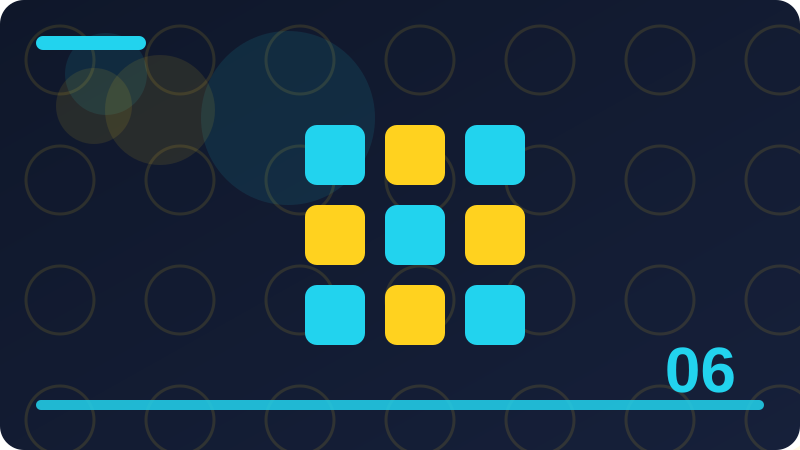

Chapter 6: Safe Browsing and Spotting Fake Sites

This chapter teaches safe browsing and spotting fake websites in plain words, for everyday life, work and family. Every section explains one idea clearly, gives an everyday example, and ends with a question that helps you check your own understanding. You do not need special tools to follow it, and every code example is defensive only, for your own systems and files.
Section 1: What Safe Browsing Really Means
This section is about what safe browsing really means, and it belongs in safe browsing and spotting fake websites for a practical reason: small choices made in a hurry often decide whether you stay safe or hand an attacker an opening. Beginners sometimes think safety is about secret knowledge or clever software, but most of it is about noticing what is happening, slowing down, and following a simple check before you act. When you understand what safe browsing really means, you can recognise the same pattern in different places, on different devices and in different messages, even when the details change. That transferable skill matters more than memorising one warning sign, because attackers change their wording, designs and stories all the time.
Think about what safe browsing really means step by step. First, ask what is being asked of you, and whether that request makes sense from this sender, on this device, at this time. Second, look for independent evidence: a known address, a bookmark you created, an official app, a phone number you already trusted, or a person you can ask in real life. Third, notice pressure. Real services can wait while you verify, and real colleagues will accept a careful check. Pressure, secrecy, flattery and fear are not proof of danger by themselves, but they are reasons to pause, because honest requests rarely depend on stopping you from thinking. Finally, choose the safest next step, which is often to do nothing yet, close the page or message, and start again through a route you trust.
Imagine a normal day. You are busy, tired or distracted, and a message, page or device prompt asks you to act quickly about what safe browsing really means. It looks familiar, it uses words you expect, and it promises to solve a problem or avoid trouble. In that moment, the easiest action feels helpful: click, reply, approve, download or share. A safer version of the same day looks almost identical, except for one pause. You stop, breathe, and ask one question: how can I check this without using the information in the message itself? That question changes the outcome. You might type an address yourself, call a known number, open the official app, or ask a trusted person. The extra minute is not wasted time; it is the protection itself, and it works even when you cannot explain every technical detail.
Put what safe browsing really means into a habit you can actually keep. Write down your own rule in plain words, for example: I will not log in from a link in an unexpected message, I will not share a code with anyone who asks for it, or I will check updates only in my device settings. Share that rule with family or colleagues if it helps, because a shared rule is easier to follow under pressure than a private intention. Keep your devices and accounts tidy as well: remove apps and accounts you no longer use, use a password manager or another safe method for different passwords, turn on two-step verification where it is offered, and keep a backup of files that matter to you.
Check: In your own words, what would you check before logging in on an unfamiliar website, and why?
Section 2: How a Website Address Works
This section is about how a website address works, and it belongs in safe browsing and spotting fake websites for a practical reason: small choices made in a hurry often decide whether you stay safe or hand an attacker an opening. Beginners sometimes think safety is about secret knowledge or clever software, but most of it is about noticing what is happening, slowing down, and following a simple check before you act. When you understand how a website address works, you can recognise the same pattern in different places, on different devices and in different messages, even when the details change. That transferable skill matters more than memorising one warning sign, because attackers change their wording, designs and stories all the time.
Think about how a website address works step by step. First, ask what is being asked of you, and whether that request makes sense from this sender, on this device, at this time. Second, look for independent evidence: a known address, a bookmark you created, an official app, a phone number you already trusted, or a person you can ask in real life. Third, notice pressure. Real services can wait while you verify, and real colleagues will accept a careful check. Pressure, secrecy, flattery and fear are not proof of danger by themselves, but they are reasons to pause, because honest requests rarely depend on stopping you from thinking. Finally, choose the safest next step, which is often to do nothing yet, close the page or message, and start again through a route you trust.
Imagine a normal day. You are busy, tired or distracted, and a message, page or device prompt asks you to act quickly about how a website address works. It looks familiar, it uses words you expect, and it promises to solve a problem or avoid trouble. In that moment, the easiest action feels helpful: click, reply, approve, download or share. A safer version of the same day looks almost identical, except for one pause. You stop, breathe, and ask one question: how can I check this without using the information in the message itself? That question changes the outcome. You might type an address yourself, call a known number, open the official app, or ask a trusted person. The extra minute is not wasted time; it is the protection itself, and it works even when you cannot explain every technical detail.
Put how a website address works into a habit you can actually keep. Write down your own rule in plain words, for example: I will not log in from a link in an unexpected message, I will not share a code with anyone who asks for it, or I will check updates only in my device settings. Share that rule with family or colleagues if it helps, because a shared rule is easier to follow under pressure than a private intention. Keep your devices and accounts tidy as well: remove apps and accounts you no longer use, use a password manager or another safe method for different passwords, turn on two-step verification where it is offered, and keep a backup of files that matter to you.
Check: In your own words, what would you check before logging in on an unfamiliar website, and why?
Section 3: Reading the Address Bar Carefully
This section is about reading the address bar carefully, and it belongs in safe browsing and spotting fake websites for a practical reason: small choices made in a hurry often decide whether you stay safe or hand an attacker an opening. Beginners sometimes think safety is about secret knowledge or clever software, but most of it is about noticing what is happening, slowing down, and following a simple check before you act. When you understand reading the address bar carefully, you can recognise the same pattern in different places, on different devices and in different messages, even when the details change. That transferable skill matters more than memorising one warning sign, because attackers change their wording, designs and stories all the time.
Think about reading the address bar carefully step by step. First, ask what is being asked of you, and whether that request makes sense from this sender, on this device, at this time. Second, look for independent evidence: a known address, a bookmark you created, an official app, a phone number you already trusted, or a person you can ask in real life. Third, notice pressure. Real services can wait while you verify, and real colleagues will accept a careful check. Pressure, secrecy, flattery and fear are not proof of danger by themselves, but they are reasons to pause, because honest requests rarely depend on stopping you from thinking. Finally, choose the safest next step, which is often to do nothing yet, close the page or message, and start again through a route you trust.
Imagine a normal day. You are busy, tired or distracted, and a message, page or device prompt asks you to act quickly about reading the address bar carefully. It looks familiar, it uses words you expect, and it promises to solve a problem or avoid trouble. In that moment, the easiest action feels helpful: click, reply, approve, download or share. A safer version of the same day looks almost identical, except for one pause. You stop, breathe, and ask one question: how can I check this without using the information in the message itself? That question changes the outcome. You might type an address yourself, call a known number, open the official app, or ask a trusted person. The extra minute is not wasted time; it is the protection itself, and it works even when you cannot explain every technical detail.
Put reading the address bar carefully into a habit you can actually keep. Write down your own rule in plain words, for example: I will not log in from a link in an unexpected message, I will not share a code with anyone who asks for it, or I will check updates only in my device settings. Share that rule with family or colleagues if it helps, because a shared rule is easier to follow under pressure than a private intention. Keep your devices and accounts tidy as well: remove apps and accounts you no longer use, use a password manager or another safe method for different passwords, turn on two-step verification where it is offered, and keep a backup of files that matter to you.
# Defensive check: inspect a link on YOUR OWN screen before clicking it.
# This never visits the link; it only shows what the address really contains.
from urllib.parse import urlparse
def inspect_link(text):
address = urlparse(text.strip())
print("Scheme:", address.scheme)
print("Real domain:", address.netloc)
print("Path:", address.path)
if address.scheme != "https":
print("Warning: this link is not using HTTPS.")
return address.netloc
inspect_link("https://example-bank.example.com/login")Check: In your own words, what would you check before logging in on an unfamiliar website, and why?
Section 4: The Padlock and What It Does Not Prove
This section is about the padlock and what it does not prove, and it belongs in safe browsing and spotting fake websites for a practical reason: small choices made in a hurry often decide whether you stay safe or hand an attacker an opening. Beginners sometimes think safety is about secret knowledge or clever software, but most of it is about noticing what is happening, slowing down, and following a simple check before you act. When you understand the padlock and what it does not prove, you can recognise the same pattern in different places, on different devices and in different messages, even when the details change. That transferable skill matters more than memorising one warning sign, because attackers change their wording, designs and stories all the time.
Attackers copy colours, logos and layouts because familiarity lowers your guard. A page can look exactly like your bank and still belong to someone else. That is why safe browsing depends on the address, the source and the behaviour of the page, not only on how professional it looks.
Think about the padlock and what it does not prove step by step. First, ask what is being asked of you, and whether that request makes sense from this sender, on this device, at this time. Second, look for independent evidence: a known address, a bookmark you created, an official app, a phone number you already trusted, or a person you can ask in real life. Third, notice pressure. Real services can wait while you verify, and real colleagues will accept a careful check. Pressure, secrecy, flattery and fear are not proof of danger by themselves, but they are reasons to pause, because honest requests rarely depend on stopping you from thinking. Finally, choose the safest next step, which is often to do nothing yet, close the page or message, and start again through a route you trust.
Put the padlock and what it does not prove into a habit you can actually keep. Write down your own rule in plain words, for example: I will not log in from a link in an unexpected message, I will not share a code with anyone who asks for it, or I will check updates only in my device settings. Share that rule with family or colleagues if it helps, because a shared rule is easier to follow under pressure than a private intention. Keep your devices and accounts tidy as well: remove apps and accounts you no longer use, use a password manager or another safe method for different passwords, turn on two-step verification where it is offered, and keep a backup of files that matter to you. None of these steps needs to be perfect on the first day. A steady, simple routine beats a complicated plan you abandon, and each safe choice makes the next one easier to remember.
A common mistake with the padlock and what it does not prove is to rely on a single sign, such as a professional design, a padlock symbol, a familiar name, or a confident voice. Each of those can be copied or misused, so use at least two independent checks before you trust an important request.
Check: In your own words, what would you check before logging in on an unfamiliar website, and why?
Section 5: HTTPS in Plain Words
This section is about https in plain words, and it belongs in safe browsing and spotting fake websites for a practical reason: small choices made in a hurry often decide whether you stay safe or hand an attacker an opening. Beginners sometimes think safety is about secret knowledge or clever software, but most of it is about noticing what is happening, slowing down, and following a simple check before you act. When you understand https in plain words, you can recognise the same pattern in different places, on different devices and in different messages, even when the details change. That transferable skill matters more than memorising one warning sign, because attackers change their wording, designs and stories all the time.
Think about https in plain words step by step. First, ask what is being asked of you, and whether that request makes sense from this sender, on this device, at this time. Second, look for independent evidence: a known address, a bookmark you created, an official app, a phone number you already trusted, or a person you can ask in real life. Third, notice pressure. Real services can wait while you verify, and real colleagues will accept a careful check. Pressure, secrecy, flattery and fear are not proof of danger by themselves, but they are reasons to pause, because honest requests rarely depend on stopping you from thinking. Finally, choose the safest next step, which is often to do nothing yet, close the page or message, and start again through a route you trust.
Imagine a normal day. You are busy, tired or distracted, and a message, page or device prompt asks you to act quickly about https in plain words. It looks familiar, it uses words you expect, and it promises to solve a problem or avoid trouble. In that moment, the easiest action feels helpful: click, reply, approve, download or share. A safer version of the same day looks almost identical, except for one pause. You stop, breathe, and ask one question: how can I check this without using the information in the message itself? That question changes the outcome. You might type an address yourself, call a known number, open the official app, or ask a trusted person. The extra minute is not wasted time; it is the protection itself, and it works even when you cannot explain every technical detail.
Put https in plain words into a habit you can actually keep. Write down your own rule in plain words, for example: I will not log in from a link in an unexpected message, I will not share a code with anyone who asks for it, or I will check updates only in my device settings. Share that rule with family or colleagues if it helps, because a shared rule is easier to follow under pressure than a private intention. Keep your devices and accounts tidy as well: remove apps and accounts you no longer use, use a password manager or another safe method for different passwords, turn on two-step verification where it is offered, and keep a backup of files that matter to you. None of these steps needs to be perfect on the first day.
Check: In your own words, what would you check before logging in on an unfamiliar website, and why?
Section 6: Spotting a Lookalike Website
This section is about spotting a lookalike website, and it belongs in safe browsing and spotting fake websites for a practical reason: small choices made in a hurry often decide whether you stay safe or hand an attacker an opening. Beginners sometimes think safety is about secret knowledge or clever software, but most of it is about noticing what is happening, slowing down, and following a simple check before you act. When you understand spotting a lookalike website, you can recognise the same pattern in different places, on different devices and in different messages, even when the details change. That transferable skill matters more than memorising one warning sign, because attackers change their wording, designs and stories all the time.
Think about spotting a lookalike website step by step. First, ask what is being asked of you, and whether that request makes sense from this sender, on this device, at this time. Second, look for independent evidence: a known address, a bookmark you created, an official app, a phone number you already trusted, or a person you can ask in real life. Third, notice pressure. Real services can wait while you verify, and real colleagues will accept a careful check. Pressure, secrecy, flattery and fear are not proof of danger by themselves, but they are reasons to pause, because honest requests rarely depend on stopping you from thinking. Finally, choose the safest next step, which is often to do nothing yet, close the page or message, and start again through a route you trust.
Imagine a normal day. You are busy, tired or distracted, and a message, page or device prompt asks you to act quickly about spotting a lookalike website. It looks familiar, it uses words you expect, and it promises to solve a problem or avoid trouble. In that moment, the easiest action feels helpful: click, reply, approve, download or share. A safer version of the same day looks almost identical, except for one pause. You stop, breathe, and ask one question: how can I check this without using the information in the message itself? That question changes the outcome. You might type an address yourself, call a known number, open the official app, or ask a trusted person. The extra minute is not wasted time; it is the protection itself, and it works even when you cannot explain every technical detail.
Put spotting a lookalike website into a habit you can actually keep. Write down your own rule in plain words, for example: I will not log in from a link in an unexpected message, I will not share a code with anyone who asks for it, or I will check updates only in my device settings. Share that rule with family or colleagues if it helps, because a shared rule is easier to follow under pressure than a private intention. Keep your devices and accounts tidy as well: remove apps and accounts you no longer use, use a password manager or another safe method for different passwords, turn on two-step verification where it is offered, and keep a backup of files that matter to you. None of these steps needs to be perfect on the first day.
# Defensive check: inspect a link on YOUR OWN screen before clicking it.
# This never visits the link; it only shows what the address really contains.
from urllib.parse import urlparse
def inspect_link(text):
address = urlparse(text.strip())
print("Scheme:", address.scheme)
print("Real domain:", address.netloc)
print("Path:", address.path)
if address.scheme != "https":
print("Warning: this link is not using HTTPS.")
return address.netloc
inspect_link("https://example-bank.example.com/login")Check: In your own words, what would you check before logging in on an unfamiliar website, and why?
Section 7: Typosquatting and Similar Spellings
This section is about typosquatting and similar spellings, and it belongs in safe browsing and spotting fake websites for a practical reason: small choices made in a hurry often decide whether you stay safe or hand an attacker an opening. Beginners sometimes think safety is about secret knowledge or clever software, but most of it is about noticing what is happening, slowing down, and following a simple check before you act. When you understand typosquatting and similar spellings, you can recognise the same pattern in different places, on different devices and in different messages, even when the details change. That transferable skill matters more than memorising one warning sign, because attackers change their wording, designs and stories all the time.
Think about typosquatting and similar spellings step by step. First, ask what is being asked of you, and whether that request makes sense from this sender, on this device, at this time. Second, look for independent evidence: a known address, a bookmark you created, an official app, a phone number you already trusted, or a person you can ask in real life. Third, notice pressure. Real services can wait while you verify, and real colleagues will accept a careful check. Pressure, secrecy, flattery and fear are not proof of danger by themselves, but they are reasons to pause, because honest requests rarely depend on stopping you from thinking. Finally, choose the safest next step, which is often to do nothing yet, close the page or message, and start again through a route you trust.
Imagine a normal day. You are busy, tired or distracted, and a message, page or device prompt asks you to act quickly about typosquatting and similar spellings. It looks familiar, it uses words you expect, and it promises to solve a problem or avoid trouble. In that moment, the easiest action feels helpful: click, reply, approve, download or share. A safer version of the same day looks almost identical, except for one pause. You stop, breathe, and ask one question: how can I check this without using the information in the message itself? That question changes the outcome. You might type an address yourself, call a known number, open the official app, or ask a trusted person. The extra minute is not wasted time; it is the protection itself, and it works even when you cannot explain every technical detail.
Put typosquatting and similar spellings into a habit you can actually keep. Write down your own rule in plain words, for example: I will not log in from a link in an unexpected message, I will not share a code with anyone who asks for it, or I will check updates only in my device settings. Share that rule with family or colleagues if it helps, because a shared rule is easier to follow under pressure than a private intention. Keep your devices and accounts tidy as well: remove apps and accounts you no longer use, use a password manager or another safe method for different passwords, turn on two-step verification where it is offered, and keep a backup of files that matter to you. None of these steps needs to be perfect on the first day.
Check: In your own words, what would you check before logging in on an unfamiliar website, and why?
Section 8: Fake Login Pages and How They Trick You
This section is about fake login pages and how they trick you, and it belongs in safe browsing and spotting fake websites for a practical reason: small choices made in a hurry often decide whether you stay safe or hand an attacker an opening. Beginners sometimes think safety is about secret knowledge or clever software, but most of it is about noticing what is happening, slowing down, and following a simple check before you act. When you understand fake login pages and how they trick you, you can recognise the same pattern in different places, on different devices and in different messages, even when the details change. That transferable skill matters more than memorising one warning sign, because attackers change their wording, designs and stories all the time.
A good browsing habit is boring on purpose: type important addresses yourself, use bookmarks you made, check before you log in, and leave any page that rushes you. Those small pauses stop most fake-site tricks, because most tricks need you to act before you think.
Think about fake login pages and how they trick you step by step. First, ask what is being asked of you, and whether that request makes sense from this sender, on this device, at this time. Second, look for independent evidence: a known address, a bookmark you created, an official app, a phone number you already trusted, or a person you can ask in real life. Third, notice pressure. Real services can wait while you verify, and real colleagues will accept a careful check. Pressure, secrecy, flattery and fear are not proof of danger by themselves, but they are reasons to pause, because honest requests rarely depend on stopping you from thinking. Finally, choose the safest next step, which is often to do nothing yet, close the page or message, and start again through a route you trust.
Put fake login pages and how they trick you into a habit you can actually keep. Write down your own rule in plain words, for example: I will not log in from a link in an unexpected message, I will not share a code with anyone who asks for it, or I will check updates only in my device settings. Share that rule with family or colleagues if it helps, because a shared rule is easier to follow under pressure than a private intention. Keep your devices and accounts tidy as well: remove apps and accounts you no longer use, use a password manager or another safe method for different passwords, turn on two-step verification where it is offered, and keep a backup of files that matter to you. None of these steps needs to be perfect on the first day. A steady, simple routine beats a complicated plan you abandon, and each safe choice makes the next one easier to remember.
A common mistake with fake login pages and how they trick you is to rely on a single sign, such as a professional design, a padlock symbol, a familiar name, or a confident voice. Each of those can be copied or misused, so use at least two independent checks before you trust an important request.
Check: In your own words, what would you check before logging in on an unfamiliar website, and why?
Section 9: Search Results That Can Mislead You
This section is about search results that can mislead you, and it belongs in safe browsing and spotting fake websites for a practical reason: small choices made in a hurry often decide whether you stay safe or hand an attacker an opening. Beginners sometimes think safety is about secret knowledge or clever software, but most of it is about noticing what is happening, slowing down, and following a simple check before you act. When you understand search results that can mislead you, you can recognise the same pattern in different places, on different devices and in different messages, even when the details change. That transferable skill matters more than memorising one warning sign, because attackers change their wording, designs and stories all the time.
Think about search results that can mislead you step by step. First, ask what is being asked of you, and whether that request makes sense from this sender, on this device, at this time. Second, look for independent evidence: a known address, a bookmark you created, an official app, a phone number you already trusted, or a person you can ask in real life. Third, notice pressure. Real services can wait while you verify, and real colleagues will accept a careful check. Pressure, secrecy, flattery and fear are not proof of danger by themselves, but they are reasons to pause, because honest requests rarely depend on stopping you from thinking. Finally, choose the safest next step, which is often to do nothing yet, close the page or message, and start again through a route you trust.
Imagine a normal day. You are busy, tired or distracted, and a message, page or device prompt asks you to act quickly about search results that can mislead you. It looks familiar, it uses words you expect, and it promises to solve a problem or avoid trouble. In that moment, the easiest action feels helpful: click, reply, approve, download or share. A safer version of the same day looks almost identical, except for one pause. You stop, breathe, and ask one question: how can I check this without using the information in the message itself? That question changes the outcome. You might type an address yourself, call a known number, open the official app, or ask a trusted person. The extra minute is not wasted time; it is the protection itself, and it works even when you cannot explain every technical detail.
Put search results that can mislead you into a habit you can actually keep. Write down your own rule in plain words, for example: I will not log in from a link in an unexpected message, I will not share a code with anyone who asks for it, or I will check updates only in my device settings. Share that rule with family or colleagues if it helps, because a shared rule is easier to follow under pressure than a private intention. Keep your devices and accounts tidy as well: remove apps and accounts you no longer use, use a password manager or another safe method for different passwords, turn on two-step verification where it is offered, and keep a backup of files that matter to you.
# Defensive check: inspect a link on YOUR OWN screen before clicking it.
# This never visits the link; it only shows what the address really contains.
from urllib.parse import urlparse
def inspect_link(text):
address = urlparse(text.strip())
print("Scheme:", address.scheme)
print("Real domain:", address.netloc)
print("Path:", address.path)
if address.scheme != "https":
print("Warning: this link is not using HTTPS.")
return address.netloc
inspect_link("https://example-bank.example.com/login")Check: In your own words, what would you check before logging in on an unfamiliar website, and why?
Section 10: Ads That Pretend to Be Real Results
This section is about ads that pretend to be real results, and it belongs in safe browsing and spotting fake websites for a practical reason: small choices made in a hurry often decide whether you stay safe or hand an attacker an opening. Beginners sometimes think safety is about secret knowledge or clever software, but most of it is about noticing what is happening, slowing down, and following a simple check before you act. When you understand ads that pretend to be real results, you can recognise the same pattern in different places, on different devices and in different messages, even when the details change. That transferable skill matters more than memorising one warning sign, because attackers change their wording, designs and stories all the time.
Think about ads that pretend to be real results step by step. First, ask what is being asked of you, and whether that request makes sense from this sender, on this device, at this time. Second, look for independent evidence: a known address, a bookmark you created, an official app, a phone number you already trusted, or a person you can ask in real life. Third, notice pressure. Real services can wait while you verify, and real colleagues will accept a careful check. Pressure, secrecy, flattery and fear are not proof of danger by themselves, but they are reasons to pause, because honest requests rarely depend on stopping you from thinking. Finally, choose the safest next step, which is often to do nothing yet, close the page or message, and start again through a route you trust.
Imagine a normal day. You are busy, tired or distracted, and a message, page or device prompt asks you to act quickly about ads that pretend to be real results. It looks familiar, it uses words you expect, and it promises to solve a problem or avoid trouble. In that moment, the easiest action feels helpful: click, reply, approve, download or share. A safer version of the same day looks almost identical, except for one pause. You stop, breathe, and ask one question: how can I check this without using the information in the message itself? That question changes the outcome. You might type an address yourself, call a known number, open the official app, or ask a trusted person. The extra minute is not wasted time; it is the protection itself, and it works even when you cannot explain every technical detail.
Put ads that pretend to be real results into a habit you can actually keep. Write down your own rule in plain words, for example: I will not log in from a link in an unexpected message, I will not share a code with anyone who asks for it, or I will check updates only in my device settings. Share that rule with family or colleagues if it helps, because a shared rule is easier to follow under pressure than a private intention.
Check: In your own words, what would you check before logging in on an unfamiliar website, and why?
Section 11: Pop-Ups That Demand Urgent Action
This section is about pop-ups that demand urgent action, and it belongs in safe browsing and spotting fake websites for a practical reason: small choices made in a hurry often decide whether you stay safe or hand an attacker an opening. Beginners sometimes think safety is about secret knowledge or clever software, but most of it is about noticing what is happening, slowing down, and following a simple check before you act. When you understand pop-ups that demand urgent action, you can recognise the same pattern in different places, on different devices and in different messages, even when the details change. That transferable skill matters more than memorising one warning sign, because attackers change their wording, designs and stories all the time.
Think about pop-ups that demand urgent action step by step. First, ask what is being asked of you, and whether that request makes sense from this sender, on this device, at this time. Second, look for independent evidence: a known address, a bookmark you created, an official app, a phone number you already trusted, or a person you can ask in real life. Third, notice pressure. Real services can wait while you verify, and real colleagues will accept a careful check. Pressure, secrecy, flattery and fear are not proof of danger by themselves, but they are reasons to pause, because honest requests rarely depend on stopping you from thinking. Finally, choose the safest next step, which is often to do nothing yet, close the page or message, and start again through a route you trust.
Imagine a normal day. You are busy, tired or distracted, and a message, page or device prompt asks you to act quickly about pop-ups that demand urgent action. It looks familiar, it uses words you expect, and it promises to solve a problem or avoid trouble. In that moment, the easiest action feels helpful: click, reply, approve, download or share. A safer version of the same day looks almost identical, except for one pause. You stop, breathe, and ask one question: how can I check this without using the information in the message itself? That question changes the outcome. You might type an address yourself, call a known number, open the official app, or ask a trusted person. The extra minute is not wasted time; it is the protection itself, and it works even when you cannot explain every technical detail.
Put pop-ups that demand urgent action into a habit you can actually keep. Write down your own rule in plain words, for example: I will not log in from a link in an unexpected message, I will not share a code with anyone who asks for it, or I will check updates only in my device settings. Share that rule with family or colleagues if it helps, because a shared rule is easier to follow under pressure than a private intention. Keep your devices and accounts tidy as well: remove apps and accounts you no longer use, use a password manager or another safe method for different passwords, turn on two-step verification where it is offered, and keep a backup of files that matter to you.
Check: In your own words, what would you check before logging in on an unfamiliar website, and why?
Section 12: Fake Download Buttons
This section is about fake download buttons, and it belongs in safe browsing and spotting fake websites for a practical reason: small choices made in a hurry often decide whether you stay safe or hand an attacker an opening. Beginners sometimes think safety is about secret knowledge or clever software, but most of it is about noticing what is happening, slowing down, and following a simple check before you act. When you understand fake download buttons, you can recognise the same pattern in different places, on different devices and in different messages, even when the details change. That transferable skill matters more than memorising one warning sign, because attackers change their wording, designs and stories all the time.
When you browse the web, you are visiting places built by strangers. Some are honest shops, schools and newsrooms. Others are copies made to steal passwords, money or personal details. Safe browsing means slowing down just enough to check where you really are before you type, click or download anything.
Think about fake download buttons step by step. First, ask what is being asked of you, and whether that request makes sense from this sender, on this device, at this time. Second, look for independent evidence: a known address, a bookmark you created, an official app, a phone number you already trusted, or a person you can ask in real life. Third, notice pressure. Real services can wait while you verify, and real colleagues will accept a careful check. Pressure, secrecy, flattery and fear are not proof of danger by themselves, but they are reasons to pause, because honest requests rarely depend on stopping you from thinking. Finally, choose the safest next step, which is often to do nothing yet, close the page or message, and start again through a route you trust.
Put fake download buttons into a habit you can actually keep. Write down your own rule in plain words, for example: I will not log in from a link in an unexpected message, I will not share a code with anyone who asks for it, or I will check updates only in my device settings. Share that rule with family or colleagues if it helps, because a shared rule is easier to follow under pressure than a private intention. Keep your devices and accounts tidy as well: remove apps and accounts you no longer use, use a password manager or another safe method for different passwords, turn on two-step verification where it is offered, and keep a backup of files that matter to you. None of these steps needs to be perfect on the first day. A steady, simple routine beats a complicated plan you abandon, and each safe choice makes the next one easier to remember.
A common mistake with fake download buttons is to rely on a single sign, such as a professional design, a padlock symbol, a familiar name, or a confident voice. Each of those can be copied or misused, so use at least two independent checks before you trust an important request. Another mistake is to feel embarrassed after a close call and stay silent.
# Defensive check: inspect a link on YOUR OWN screen before clicking it.
# This never visits the link; it only shows what the address really contains.
from urllib.parse import urlparse
def inspect_link(text):
address = urlparse(text.strip())
print("Scheme:", address.scheme)
print("Real domain:", address.netloc)
print("Path:", address.path)
if address.scheme != "https":
print("Warning: this link is not using HTTPS.")
return address.netloc
inspect_link("https://example-bank.example.com/login")Check: In your own words, what would you check before logging in on an unfamiliar website, and why?
Section 13: Free Offers That Cost You Plenty
This section is about free offers that cost you plenty, and it belongs in safe browsing and spotting fake websites for a practical reason: small choices made in a hurry often decide whether you stay safe or hand an attacker an opening. Beginners sometimes think safety is about secret knowledge or clever software, but most of it is about noticing what is happening, slowing down, and following a simple check before you act. When you understand free offers that cost you plenty, you can recognise the same pattern in different places, on different devices and in different messages, even when the details change. That transferable skill matters more than memorising one warning sign, because attackers change their wording, designs and stories all the time.
Think about free offers that cost you plenty step by step. First, ask what is being asked of you, and whether that request makes sense from this sender, on this device, at this time. Second, look for independent evidence: a known address, a bookmark you created, an official app, a phone number you already trusted, or a person you can ask in real life. Third, notice pressure. Real services can wait while you verify, and real colleagues will accept a careful check. Pressure, secrecy, flattery and fear are not proof of danger by themselves, but they are reasons to pause, because honest requests rarely depend on stopping you from thinking. Finally, choose the safest next step, which is often to do nothing yet, close the page or message, and start again through a route you trust.
Imagine a normal day. You are busy, tired or distracted, and a message, page or device prompt asks you to act quickly about free offers that cost you plenty. It looks familiar, it uses words you expect, and it promises to solve a problem or avoid trouble. In that moment, the easiest action feels helpful: click, reply, approve, download or share. A safer version of the same day looks almost identical, except for one pause. You stop, breathe, and ask one question: how can I check this without using the information in the message itself? That question changes the outcome. You might type an address yourself, call a known number, open the official app, or ask a trusted person. The extra minute is not wasted time; it is the protection itself, and it works even when you cannot explain every technical detail.
Put free offers that cost you plenty into a habit you can actually keep. Write down your own rule in plain words, for example: I will not log in from a link in an unexpected message, I will not share a code with anyone who asks for it, or I will check updates only in my device settings. Share that rule with family or colleagues if it helps, because a shared rule is easier to follow under pressure than a private intention. Keep your devices and accounts tidy as well: remove apps and accounts you no longer use, use a password manager or another safe method for different passwords, turn on two-step verification where it is offered, and keep a backup of files that matter to you.
Check: In your own words, what would you check before logging in on an unfamiliar website, and why?
Section 14: Checking a Site Before You Trust It
This section is about checking a site before you trust it, and it belongs in safe browsing and spotting fake websites for a practical reason: small choices made in a hurry often decide whether you stay safe or hand an attacker an opening. Beginners sometimes think safety is about secret knowledge or clever software, but most of it is about noticing what is happening, slowing down, and following a simple check before you act. When you understand checking a site before you trust it, you can recognise the same pattern in different places, on different devices and in different messages, even when the details change. That transferable skill matters more than memorising one warning sign, because attackers change their wording, designs and stories all the time.
Think about checking a site before you trust it step by step. First, ask what is being asked of you, and whether that request makes sense from this sender, on this device, at this time. Second, look for independent evidence: a known address, a bookmark you created, an official app, a phone number you already trusted, or a person you can ask in real life. Third, notice pressure. Real services can wait while you verify, and real colleagues will accept a careful check. Pressure, secrecy, flattery and fear are not proof of danger by themselves, but they are reasons to pause, because honest requests rarely depend on stopping you from thinking. Finally, choose the safest next step, which is often to do nothing yet, close the page or message, and start again through a route you trust.
Imagine a normal day. You are busy, tired or distracted, and a message, page or device prompt asks you to act quickly about checking a site before you trust it. It looks familiar, it uses words you expect, and it promises to solve a problem or avoid trouble. In that moment, the easiest action feels helpful: click, reply, approve, download or share. A safer version of the same day looks almost identical, except for one pause. You stop, breathe, and ask one question: how can I check this without using the information in the message itself? That question changes the outcome. You might type an address yourself, call a known number, open the official app, or ask a trusted person. The extra minute is not wasted time; it is the protection itself, and it works even when you cannot explain every technical detail.
Put checking a site before you trust it into a habit you can actually keep. Write down your own rule in plain words, for example: I will not log in from a link in an unexpected message, I will not share a code with anyone who asks for it, or I will check updates only in my device settings. Share that rule with family or colleagues if it helps, because a shared rule is easier to follow under pressure than a private intention.
Check: In your own words, what would you check before logging in on an unfamiliar website, and why?
Section 15: Who Owns a Website
This section is about who owns a website, and it belongs in safe browsing and spotting fake websites for a practical reason: small choices made in a hurry often decide whether you stay safe or hand an attacker an opening. Beginners sometimes think safety is about secret knowledge or clever software, but most of it is about noticing what is happening, slowing down, and following a simple check before you act. When you understand who owns a website, you can recognise the same pattern in different places, on different devices and in different messages, even when the details change. That transferable skill matters more than memorising one warning sign, because attackers change their wording, designs and stories all the time.
Think about who owns a website step by step. First, ask what is being asked of you, and whether that request makes sense from this sender, on this device, at this time. Second, look for independent evidence: a known address, a bookmark you created, an official app, a phone number you already trusted, or a person you can ask in real life. Third, notice pressure. Real services can wait while you verify, and real colleagues will accept a careful check. Pressure, secrecy, flattery and fear are not proof of danger by themselves, but they are reasons to pause, because honest requests rarely depend on stopping you from thinking. Finally, choose the safest next step, which is often to do nothing yet, close the page or message, and start again through a route you trust.
Imagine a normal day. You are busy, tired or distracted, and a message, page or device prompt asks you to act quickly about who owns a website. It looks familiar, it uses words you expect, and it promises to solve a problem or avoid trouble. In that moment, the easiest action feels helpful: click, reply, approve, download or share. A safer version of the same day looks almost identical, except for one pause. You stop, breathe, and ask one question: how can I check this without using the information in the message itself? That question changes the outcome. You might type an address yourself, call a known number, open the official app, or ask a trusted person. The extra minute is not wasted time; it is the protection itself, and it works even when you cannot explain every technical detail.
Put who owns a website into a habit you can actually keep. Write down your own rule in plain words, for example: I will not log in from a link in an unexpected message, I will not share a code with anyone who asks for it, or I will check updates only in my device settings. Share that rule with family or colleagues if it helps, because a shared rule is easier to follow under pressure than a private intention. Keep your devices and accounts tidy as well: remove apps and accounts you no longer use, use a password manager or another safe method for different passwords, turn on two-step verification where it is offered, and keep a backup of files that matter to you. None of these steps needs to be perfect on the first day.
# Defensive check: inspect a link on YOUR OWN screen before clicking it.
# This never visits the link; it only shows what the address really contains.
from urllib.parse import urlparse
def inspect_link(text):
address = urlparse(text.strip())
print("Scheme:", address.scheme)
print("Real domain:", address.netloc)
print("Path:", address.path)
if address.scheme != "https":
print("Warning: this link is not using HTTPS.")
return address.netloc
inspect_link("https://example-bank.example.com/login")Check: In your own words, what would you check before logging in on an unfamiliar website, and why?
Section 16: New Websites and Extra Caution
This section is about new websites and extra caution, and it belongs in safe browsing and spotting fake websites for a practical reason: small choices made in a hurry often decide whether you stay safe or hand an attacker an opening. Beginners sometimes think safety is about secret knowledge or clever software, but most of it is about noticing what is happening, slowing down, and following a simple check before you act. When you understand new websites and extra caution, you can recognise the same pattern in different places, on different devices and in different messages, even when the details change. That transferable skill matters more than memorising one warning sign, because attackers change their wording, designs and stories all the time.
Attackers copy colours, logos and layouts because familiarity lowers your guard. A page can look exactly like your bank and still belong to someone else. That is why safe browsing depends on the address, the source and the behaviour of the page, not only on how professional it looks.
Think about new websites and extra caution step by step. First, ask what is being asked of you, and whether that request makes sense from this sender, on this device, at this time. Second, look for independent evidence: a known address, a bookmark you created, an official app, a phone number you already trusted, or a person you can ask in real life. Third, notice pressure. Real services can wait while you verify, and real colleagues will accept a careful check. Pressure, secrecy, flattery and fear are not proof of danger by themselves, but they are reasons to pause, because honest requests rarely depend on stopping you from thinking. Finally, choose the safest next step, which is often to do nothing yet, close the page or message, and start again through a route you trust.
Put new websites and extra caution into a habit you can actually keep. Write down your own rule in plain words, for example: I will not log in from a link in an unexpected message, I will not share a code with anyone who asks for it, or I will check updates only in my device settings. Share that rule with family or colleagues if it helps, because a shared rule is easier to follow under pressure than a private intention. Keep your devices and accounts tidy as well: remove apps and accounts you no longer use, use a password manager or another safe method for different passwords, turn on two-step verification where it is offered, and keep a backup of files that matter to you. None of these steps needs to be perfect on the first day. A steady, simple routine beats a complicated plan you abandon, and each safe choice makes the next one easier to remember.
A common mistake with new websites and extra caution is to rely on a single sign, such as a professional design, a padlock symbol, a familiar name, or a confident voice. Each of those can be copied or misused, so use at least two independent checks before you trust an important request. Another mistake is to feel embarrassed after a close call and stay silent.
Check: In your own words, what would you check before logging in on an unfamiliar website, and why?
Section 17: Shortened Links and Hidden Destinations
This section is about shortened links and hidden destinations, and it belongs in safe browsing and spotting fake websites for a practical reason: small choices made in a hurry often decide whether you stay safe or hand an attacker an opening. Beginners sometimes think safety is about secret knowledge or clever software, but most of it is about noticing what is happening, slowing down, and following a simple check before you act. When you understand shortened links and hidden destinations, you can recognise the same pattern in different places, on different devices and in different messages, even when the details change. That transferable skill matters more than memorising one warning sign, because attackers change their wording, designs and stories all the time.
Think about shortened links and hidden destinations step by step. First, ask what is being asked of you, and whether that request makes sense from this sender, on this device, at this time. Second, look for independent evidence: a known address, a bookmark you created, an official app, a phone number you already trusted, or a person you can ask in real life. Third, notice pressure. Real services can wait while you verify, and real colleagues will accept a careful check. Pressure, secrecy, flattery and fear are not proof of danger by themselves, but they are reasons to pause, because honest requests rarely depend on stopping you from thinking. Finally, choose the safest next step, which is often to do nothing yet, close the page or message, and start again through a route you trust.
Imagine a normal day. You are busy, tired or distracted, and a message, page or device prompt asks you to act quickly about shortened links and hidden destinations. It looks familiar, it uses words you expect, and it promises to solve a problem or avoid trouble. In that moment, the easiest action feels helpful: click, reply, approve, download or share. A safer version of the same day looks almost identical, except for one pause. You stop, breathe, and ask one question: how can I check this without using the information in the message itself? That question changes the outcome. You might type an address yourself, call a known number, open the official app, or ask a trusted person. The extra minute is not wasted time; it is the protection itself, and it works even when you cannot explain every technical detail.
Put shortened links and hidden destinations into a habit you can actually keep. Write down your own rule in plain words, for example: I will not log in from a link in an unexpected message, I will not share a code with anyone who asks for it, or I will check updates only in my device settings. Share that rule with family or colleagues if it helps, because a shared rule is easier to follow under pressure than a private intention. Keep your devices and accounts tidy as well: remove apps and accounts you no longer use, use a password manager or another safe method for different passwords, turn on two-step verification where it is offered, and keep a backup of files that matter to you.
Check: In your own words, what would you check before logging in on an unfamiliar website, and why?
Section 18: QR Codes and Where They Really Go
This section is about qr codes and where they really go, and it belongs in safe browsing and spotting fake websites for a practical reason: small choices made in a hurry often decide whether you stay safe or hand an attacker an opening. Beginners sometimes think safety is about secret knowledge or clever software, but most of it is about noticing what is happening, slowing down, and following a simple check before you act. When you understand qr codes and where they really go, you can recognise the same pattern in different places, on different devices and in different messages, even when the details change. That transferable skill matters more than memorising one warning sign, because attackers change their wording, designs and stories all the time.
Think about qr codes and where they really go step by step. First, ask what is being asked of you, and whether that request makes sense from this sender, on this device, at this time. Second, look for independent evidence: a known address, a bookmark you created, an official app, a phone number you already trusted, or a person you can ask in real life. Third, notice pressure. Real services can wait while you verify, and real colleagues will accept a careful check. Pressure, secrecy, flattery and fear are not proof of danger by themselves, but they are reasons to pause, because honest requests rarely depend on stopping you from thinking. Finally, choose the safest next step, which is often to do nothing yet, close the page or message, and start again through a route you trust.
Imagine a normal day. You are busy, tired or distracted, and a message, page or device prompt asks you to act quickly about qr codes and where they really go. It looks familiar, it uses words you expect, and it promises to solve a problem or avoid trouble. In that moment, the easiest action feels helpful: click, reply, approve, download or share. A safer version of the same day looks almost identical, except for one pause. You stop, breathe, and ask one question: how can I check this without using the information in the message itself? That question changes the outcome. You might type an address yourself, call a known number, open the official app, or ask a trusted person. The extra minute is not wasted time; it is the protection itself, and it works even when you cannot explain every technical detail.
Put qr codes and where they really go into a habit you can actually keep. Write down your own rule in plain words, for example: I will not log in from a link in an unexpected message, I will not share a code with anyone who asks for it, or I will check updates only in my device settings. Share that rule with family or colleagues if it helps, because a shared rule is easier to follow under pressure than a private intention.
# Defensive check: inspect a link on YOUR OWN screen before clicking it.
# This never visits the link; it only shows what the address really contains.
from urllib.parse import urlparse
def inspect_link(text):
address = urlparse(text.strip())
print("Scheme:", address.scheme)
print("Real domain:", address.netloc)
print("Path:", address.path)
if address.scheme != "https":
print("Warning: this link is not using HTTPS.")
return address.netloc
inspect_link("https://example-bank.example.com/login")Check: In your own words, what would you check before logging in on an unfamiliar website, and why?
Section 19: Browser Warnings You Should Not Ignore
This section is about browser warnings you should not ignore, and it belongs in safe browsing and spotting fake websites for a practical reason: small choices made in a hurry often decide whether you stay safe or hand an attacker an opening. Beginners sometimes think safety is about secret knowledge or clever software, but most of it is about noticing what is happening, slowing down, and following a simple check before you act. When you understand browser warnings you should not ignore, you can recognise the same pattern in different places, on different devices and in different messages, even when the details change. That transferable skill matters more than memorising one warning sign, because attackers change their wording, designs and stories all the time.
Think about browser warnings you should not ignore step by step. First, ask what is being asked of you, and whether that request makes sense from this sender, on this device, at this time. Second, look for independent evidence: a known address, a bookmark you created, an official app, a phone number you already trusted, or a person you can ask in real life. Third, notice pressure. Real services can wait while you verify, and real colleagues will accept a careful check. Pressure, secrecy, flattery and fear are not proof of danger by themselves, but they are reasons to pause, because honest requests rarely depend on stopping you from thinking. Finally, choose the safest next step, which is often to do nothing yet, close the page or message, and start again through a route you trust.
Imagine a normal day. You are busy, tired or distracted, and a message, page or device prompt asks you to act quickly about browser warnings you should not ignore. It looks familiar, it uses words you expect, and it promises to solve a problem or avoid trouble. In that moment, the easiest action feels helpful: click, reply, approve, download or share. A safer version of the same day looks almost identical, except for one pause. You stop, breathe, and ask one question: how can I check this without using the information in the message itself? That question changes the outcome. You might type an address yourself, call a known number, open the official app, or ask a trusted person. The extra minute is not wasted time; it is the protection itself, and it works even when you cannot explain every technical detail.
Put browser warnings you should not ignore into a habit you can actually keep. Write down your own rule in plain words, for example: I will not log in from a link in an unexpected message, I will not share a code with anyone who asks for it, or I will check updates only in my device settings. Share that rule with family or colleagues if it helps, because a shared rule is easier to follow under pressure than a private intention. Keep your devices and accounts tidy as well: remove apps and accounts you no longer use, use a password manager or another safe method for different passwords, turn on two-step verification where it is offered, and keep a backup of files that matter to you.
Check: In your own words, what would you check before logging in on an unfamiliar website, and why?
Section 20: When Your Browser Blocks a Page
This section is about when your browser blocks a page, and it belongs in safe browsing and spotting fake websites for a practical reason: small choices made in a hurry often decide whether you stay safe or hand an attacker an opening. Beginners sometimes think safety is about secret knowledge or clever software, but most of it is about noticing what is happening, slowing down, and following a simple check before you act. When you understand when your browser blocks a page, you can recognise the same pattern in different places, on different devices and in different messages, even when the details change. That transferable skill matters more than memorising one warning sign, because attackers change their wording, designs and stories all the time.
A good browsing habit is boring on purpose: type important addresses yourself, use bookmarks you made, check before you log in, and leave any page that rushes you. Those small pauses stop most fake-site tricks, because most tricks need you to act before you think.
Think about when your browser blocks a page step by step. First, ask what is being asked of you, and whether that request makes sense from this sender, on this device, at this time. Second, look for independent evidence: a known address, a bookmark you created, an official app, a phone number you already trusted, or a person you can ask in real life. Third, notice pressure. Real services can wait while you verify, and real colleagues will accept a careful check. Pressure, secrecy, flattery and fear are not proof of danger by themselves, but they are reasons to pause, because honest requests rarely depend on stopping you from thinking. Finally, choose the safest next step, which is often to do nothing yet, close the page or message, and start again through a route you trust.
Put when your browser blocks a page into a habit you can actually keep. Write down your own rule in plain words, for example: I will not log in from a link in an unexpected message, I will not share a code with anyone who asks for it, or I will check updates only in my device settings. Share that rule with family or colleagues if it helps, because a shared rule is easier to follow under pressure than a private intention. Keep your devices and accounts tidy as well: remove apps and accounts you no longer use, use a password manager or another safe method for different passwords, turn on two-step verification where it is offered, and keep a backup of files that matter to you. None of these steps needs to be perfect on the first day. A steady, simple routine beats a complicated plan you abandon, and each safe choice makes the next one easier to remember.
A common mistake with when your browser blocks a page is to rely on a single sign, such as a professional design, a padlock symbol, a familiar name, or a confident voice. Each of those can be copied or misused, so use at least two independent checks before you trust an important request. Another mistake is to feel embarrassed after a close call and stay silent.
Check: In your own words, what would you check before logging in on an unfamiliar website, and why?
Section 21: Safe Searching Habits
This section is about safe searching habits, and it belongs in safe browsing and spotting fake websites for a practical reason: small choices made in a hurry often decide whether you stay safe or hand an attacker an opening. Beginners sometimes think safety is about secret knowledge or clever software, but most of it is about noticing what is happening, slowing down, and following a simple check before you act. When you understand safe searching habits, you can recognise the same pattern in different places, on different devices and in different messages, even when the details change. That transferable skill matters more than memorising one warning sign, because attackers change their wording, designs and stories all the time.
Think about safe searching habits step by step. First, ask what is being asked of you, and whether that request makes sense from this sender, on this device, at this time. Second, look for independent evidence: a known address, a bookmark you created, an official app, a phone number you already trusted, or a person you can ask in real life. Third, notice pressure. Real services can wait while you verify, and real colleagues will accept a careful check. Pressure, secrecy, flattery and fear are not proof of danger by themselves, but they are reasons to pause, because honest requests rarely depend on stopping you from thinking. Finally, choose the safest next step, which is often to do nothing yet, close the page or message, and start again through a route you trust.
Imagine a normal day. You are busy, tired or distracted, and a message, page or device prompt asks you to act quickly about safe searching habits. It looks familiar, it uses words you expect, and it promises to solve a problem or avoid trouble. In that moment, the easiest action feels helpful: click, reply, approve, download or share. A safer version of the same day looks almost identical, except for one pause. You stop, breathe, and ask one question: how can I check this without using the information in the message itself? That question changes the outcome. You might type an address yourself, call a known number, open the official app, or ask a trusted person. The extra minute is not wasted time; it is the protection itself, and it works even when you cannot explain every technical detail.
Put safe searching habits into a habit you can actually keep. Write down your own rule in plain words, for example: I will not log in from a link in an unexpected message, I will not share a code with anyone who asks for it, or I will check updates only in my device settings. Share that rule with family or colleagues if it helps, because a shared rule is easier to follow under pressure than a private intention. Keep your devices and accounts tidy as well: remove apps and accounts you no longer use, use a password manager or another safe method for different passwords, turn on two-step verification where it is offered, and keep a backup of files that matter to you. None of these steps needs to be perfect on the first day.
# Defensive check: inspect a link on YOUR OWN screen before clicking it.
# This never visits the link; it only shows what the address really contains.
from urllib.parse import urlparse
def inspect_link(text):
address = urlparse(text.strip())
print("Scheme:", address.scheme)
print("Real domain:", address.netloc)
print("Path:", address.path)
if address.scheme != "https":
print("Warning: this link is not using HTTPS.")
return address.netloc
inspect_link("https://example-bank.example.com/login")Check: In your own words, what would you check before logging in on an unfamiliar website, and why?
Section 22: Checking News Before You Share It
This section is about checking news before you share it, and it belongs in safe browsing and spotting fake websites for a practical reason: small choices made in a hurry often decide whether you stay safe or hand an attacker an opening. Beginners sometimes think safety is about secret knowledge or clever software, but most of it is about noticing what is happening, slowing down, and following a simple check before you act. When you understand checking news before you share it, you can recognise the same pattern in different places, on different devices and in different messages, even when the details change. That transferable skill matters more than memorising one warning sign, because attackers change their wording, designs and stories all the time.
Think about checking news before you share it step by step. First, ask what is being asked of you, and whether that request makes sense from this sender, on this device, at this time. Second, look for independent evidence: a known address, a bookmark you created, an official app, a phone number you already trusted, or a person you can ask in real life. Third, notice pressure. Real services can wait while you verify, and real colleagues will accept a careful check. Pressure, secrecy, flattery and fear are not proof of danger by themselves, but they are reasons to pause, because honest requests rarely depend on stopping you from thinking. Finally, choose the safest next step, which is often to do nothing yet, close the page or message, and start again through a route you trust.
Imagine a normal day. You are busy, tired or distracted, and a message, page or device prompt asks you to act quickly about checking news before you share it. It looks familiar, it uses words you expect, and it promises to solve a problem or avoid trouble. In that moment, the easiest action feels helpful: click, reply, approve, download or share. A safer version of the same day looks almost identical, except for one pause. You stop, breathe, and ask one question: how can I check this without using the information in the message itself? That question changes the outcome. You might type an address yourself, call a known number, open the official app, or ask a trusted person. The extra minute is not wasted time; it is the protection itself, and it works even when you cannot explain every technical detail.
Put checking news before you share it into a habit you can actually keep. Write down your own rule in plain words, for example: I will not log in from a link in an unexpected message, I will not share a code with anyone who asks for it, or I will check updates only in my device settings. Share that rule with family or colleagues if it helps, because a shared rule is easier to follow under pressure than a private intention. Keep your devices and accounts tidy as well: remove apps and accounts you no longer use, use a password manager or another safe method for different passwords, turn on two-step verification where it is offered, and keep a backup of files that matter to you.
Check: In your own words, what would you check before logging in on an unfamiliar website, and why?
Section 23: Video and Image Sites That Trick You
This section is about video and image sites that trick you, and it belongs in safe browsing and spotting fake websites for a practical reason: small choices made in a hurry often decide whether you stay safe or hand an attacker an opening. Beginners sometimes think safety is about secret knowledge or clever software, but most of it is about noticing what is happening, slowing down, and following a simple check before you act. When you understand video and image sites that trick you, you can recognise the same pattern in different places, on different devices and in different messages, even when the details change. That transferable skill matters more than memorising one warning sign, because attackers change their wording, designs and stories all the time.
Think about video and image sites that trick you step by step. First, ask what is being asked of you, and whether that request makes sense from this sender, on this device, at this time. Second, look for independent evidence: a known address, a bookmark you created, an official app, a phone number you already trusted, or a person you can ask in real life. Third, notice pressure. Real services can wait while you verify, and real colleagues will accept a careful check. Pressure, secrecy, flattery and fear are not proof of danger by themselves, but they are reasons to pause, because honest requests rarely depend on stopping you from thinking. Finally, choose the safest next step, which is often to do nothing yet, close the page or message, and start again through a route you trust.
Imagine a normal day. You are busy, tired or distracted, and a message, page or device prompt asks you to act quickly about video and image sites that trick you. It looks familiar, it uses words you expect, and it promises to solve a problem or avoid trouble. In that moment, the easiest action feels helpful: click, reply, approve, download or share. A safer version of the same day looks almost identical, except for one pause. You stop, breathe, and ask one question: how can I check this without using the information in the message itself? That question changes the outcome. You might type an address yourself, call a known number, open the official app, or ask a trusted person. The extra minute is not wasted time; it is the protection itself, and it works even when you cannot explain every technical detail.
Put video and image sites that trick you into a habit you can actually keep. Write down your own rule in plain words, for example: I will not log in from a link in an unexpected message, I will not share a code with anyone who asks for it, or I will check updates only in my device settings. Share that rule with family or colleagues if it helps, because a shared rule is easier to follow under pressure than a private intention.
Check: In your own words, what would you check before logging in on an unfamiliar website, and why?
Section 24: Shopping Sites and Too-Good Prices
This section is about shopping sites and too-good prices, and it belongs in safe browsing and spotting fake websites for a practical reason: small choices made in a hurry often decide whether you stay safe or hand an attacker an opening. Beginners sometimes think safety is about secret knowledge or clever software, but most of it is about noticing what is happening, slowing down, and following a simple check before you act. When you understand shopping sites and too-good prices, you can recognise the same pattern in different places, on different devices and in different messages, even when the details change. That transferable skill matters more than memorising one warning sign, because attackers change their wording, designs and stories all the time.
When you browse the web, you are visiting places built by strangers. Some are honest shops, schools and newsrooms. Others are copies made to steal passwords, money or personal details. Safe browsing means slowing down just enough to check where you really are before you type, click or download anything.
Think about shopping sites and too-good prices step by step. First, ask what is being asked of you, and whether that request makes sense from this sender, on this device, at this time. Second, look for independent evidence: a known address, a bookmark you created, an official app, a phone number you already trusted, or a person you can ask in real life. Third, notice pressure. Real services can wait while you verify, and real colleagues will accept a careful check. Pressure, secrecy, flattery and fear are not proof of danger by themselves, but they are reasons to pause, because honest requests rarely depend on stopping you from thinking. Finally, choose the safest next step, which is often to do nothing yet, close the page or message, and start again through a route you trust.
Put shopping sites and too-good prices into a habit you can actually keep. Write down your own rule in plain words, for example: I will not log in from a link in an unexpected message, I will not share a code with anyone who asks for it, or I will check updates only in my device settings. Share that rule with family or colleagues if it helps, because a shared rule is easier to follow under pressure than a private intention. Keep your devices and accounts tidy as well: remove apps and accounts you no longer use, use a password manager or another safe method for different passwords, turn on two-step verification where it is offered, and keep a backup of files that matter to you. None of these steps needs to be perfect on the first day. A steady, simple routine beats a complicated plan you abandon, and each safe choice makes the next one easier to remember.
A common mistake with shopping sites and too-good prices is to rely on a single sign, such as a professional design, a padlock symbol, a familiar name, or a confident voice. Each of those can be copied or misused, so use at least two independent checks before you trust an important request. Another mistake is to feel embarrassed after a close call and stay silent.
# Defensive check: inspect a link on YOUR OWN screen before clicking it.
# This never visits the link; it only shows what the address really contains.
from urllib.parse import urlparse
def inspect_link(text):
address = urlparse(text.strip())
print("Scheme:", address.scheme)
print("Real domain:", address.netloc)
print("Path:", address.path)
if address.scheme != "https":
print("Warning: this link is not using HTTPS.")
return address.netloc
inspect_link("https://example-bank.example.com/login")Check: In your own words, what would you check before logging in on an unfamiliar website, and why?
Section 25: Bank and Payment Sites Done Safely
This section is about bank and payment sites done safely, and it belongs in safe browsing and spotting fake websites for a practical reason: small choices made in a hurry often decide whether you stay safe or hand an attacker an opening. Beginners sometimes think safety is about secret knowledge or clever software, but most of it is about noticing what is happening, slowing down, and following a simple check before you act. When you understand bank and payment sites done safely, you can recognise the same pattern in different places, on different devices and in different messages, even when the details change. That transferable skill matters more than memorising one warning sign, because attackers change their wording, designs and stories all the time.
Think about bank and payment sites done safely step by step. First, ask what is being asked of you, and whether that request makes sense from this sender, on this device, at this time. Second, look for independent evidence: a known address, a bookmark you created, an official app, a phone number you already trusted, or a person you can ask in real life. Third, notice pressure. Real services can wait while you verify, and real colleagues will accept a careful check. Pressure, secrecy, flattery and fear are not proof of danger by themselves, but they are reasons to pause, because honest requests rarely depend on stopping you from thinking. Finally, choose the safest next step, which is often to do nothing yet, close the page or message, and start again through a route you trust.
Imagine a normal day. You are busy, tired or distracted, and a message, page or device prompt asks you to act quickly about bank and payment sites done safely. It looks familiar, it uses words you expect, and it promises to solve a problem or avoid trouble. In that moment, the easiest action feels helpful: click, reply, approve, download or share. A safer version of the same day looks almost identical, except for one pause. You stop, breathe, and ask one question: how can I check this without using the information in the message itself? That question changes the outcome. You might type an address yourself, call a known number, open the official app, or ask a trusted person. The extra minute is not wasted time; it is the protection itself, and it works even when you cannot explain every technical detail.
Put bank and payment sites done safely into a habit you can actually keep. Write down your own rule in plain words, for example: I will not log in from a link in an unexpected message, I will not share a code with anyone who asks for it, or I will check updates only in my device settings. Share that rule with family or colleagues if it helps, because a shared rule is easier to follow under pressure than a private intention. Keep your devices and accounts tidy as well: remove apps and accounts you no longer use, use a password manager or another safe method for different passwords, turn on two-step verification where it is offered, and keep a backup of files that matter to you.
Check: In your own words, what would you check before logging in on an unfamiliar website, and why?
Section 26: Typing Addresses Yourself Instead of Clicking
This section is about typing addresses yourself instead of clicking, and it belongs in safe browsing and spotting fake websites for a practical reason: small choices made in a hurry often decide whether you stay safe or hand an attacker an opening. Beginners sometimes think safety is about secret knowledge or clever software, but most of it is about noticing what is happening, slowing down, and following a simple check before you act. When you understand typing addresses yourself instead of clicking, you can recognise the same pattern in different places, on different devices and in different messages, even when the details change. That transferable skill matters more than memorising one warning sign, because attackers change their wording, designs and stories all the time.
Think about typing addresses yourself instead of clicking step by step. First, ask what is being asked of you, and whether that request makes sense from this sender, on this device, at this time. Second, look for independent evidence: a known address, a bookmark you created, an official app, a phone number you already trusted, or a person you can ask in real life. Third, notice pressure. Real services can wait while you verify, and real colleagues will accept a careful check. Pressure, secrecy, flattery and fear are not proof of danger by themselves, but they are reasons to pause, because honest requests rarely depend on stopping you from thinking. Finally, choose the safest next step, which is often to do nothing yet, close the page or message, and start again through a route you trust.
Imagine a normal day. You are busy, tired or distracted, and a message, page or device prompt asks you to act quickly about typing addresses yourself instead of clicking. It looks familiar, it uses words you expect, and it promises to solve a problem or avoid trouble. In that moment, the easiest action feels helpful: click, reply, approve, download or share. A safer version of the same day looks almost identical, except for one pause. You stop, breathe, and ask one question: how can I check this without using the information in the message itself? That question changes the outcome. You might type an address yourself, call a known number, open the official app, or ask a trusted person. The extra minute is not wasted time; it is the protection itself, and it works even when you cannot explain every technical detail.
Put typing addresses yourself instead of clicking into a habit you can actually keep. Write down your own rule in plain words, for example: I will not log in from a link in an unexpected message, I will not share a code with anyone who asks for it, or I will check updates only in my device settings. Share that rule with family or colleagues if it helps, because a shared rule is easier to follow under pressure than a private intention. Keep your devices and accounts tidy as well: remove apps and accounts you no longer use, use a password manager or another safe method for different passwords, turn on two-step verification where it is offered, and keep a backup of files that matter to you.
Check: In your own words, what would you check before logging in on an unfamiliar website, and why?
Section 27: Bookmarks for Sites You Use Often
This section is about bookmarks for sites you use often, and it belongs in safe browsing and spotting fake websites for a practical reason: small choices made in a hurry often decide whether you stay safe or hand an attacker an opening. Beginners sometimes think safety is about secret knowledge or clever software, but most of it is about noticing what is happening, slowing down, and following a simple check before you act. When you understand bookmarks for sites you use often, you can recognise the same pattern in different places, on different devices and in different messages, even when the details change. That transferable skill matters more than memorising one warning sign, because attackers change their wording, designs and stories all the time.
Think about bookmarks for sites you use often step by step. First, ask what is being asked of you, and whether that request makes sense from this sender, on this device, at this time. Second, look for independent evidence: a known address, a bookmark you created, an official app, a phone number you already trusted, or a person you can ask in real life. Third, notice pressure. Real services can wait while you verify, and real colleagues will accept a careful check. Pressure, secrecy, flattery and fear are not proof of danger by themselves, but they are reasons to pause, because honest requests rarely depend on stopping you from thinking. Finally, choose the safest next step, which is often to do nothing yet, close the page or message, and start again through a route you trust.
Imagine a normal day. You are busy, tired or distracted, and a message, page or device prompt asks you to act quickly about bookmarks for sites you use often. It looks familiar, it uses words you expect, and it promises to solve a problem or avoid trouble. In that moment, the easiest action feels helpful: click, reply, approve, download or share. A safer version of the same day looks almost identical, except for one pause. You stop, breathe, and ask one question: how can I check this without using the information in the message itself? That question changes the outcome. You might type an address yourself, call a known number, open the official app, or ask a trusted person. The extra minute is not wasted time; it is the protection itself, and it works even when you cannot explain every technical detail.
Put bookmarks for sites you use often into a habit you can actually keep. Write down your own rule in plain words, for example: I will not log in from a link in an unexpected message, I will not share a code with anyone who asks for it, or I will check updates only in my device settings. Share that rule with family or colleagues if it helps, because a shared rule is easier to follow under pressure than a private intention. Keep your devices and accounts tidy as well: remove apps and accounts you no longer use, use a password manager or another safe method for different passwords, turn on two-step verification where it is offered, and keep a backup of files that matter to you.
# Defensive check: inspect a link on YOUR OWN screen before clicking it.
# This never visits the link; it only shows what the address really contains.
from urllib.parse import urlparse
def inspect_link(text):
address = urlparse(text.strip())
print("Scheme:", address.scheme)
print("Real domain:", address.netloc)
print("Path:", address.path)
if address.scheme != "https":
print("Warning: this link is not using HTTPS.")
return address.netloc
inspect_link("https://example-bank.example.com/login")Check: In your own words, what would you check before logging in on an unfamiliar website, and why?
Section 28: Browser Extensions: Helpful or Risky
This section is about browser extensions: helpful or risky, and it belongs in safe browsing and spotting fake websites for a practical reason: small choices made in a hurry often decide whether you stay safe or hand an attacker an opening. Beginners sometimes think safety is about secret knowledge or clever software, but most of it is about noticing what is happening, slowing down, and following a simple check before you act. When you understand browser extensions: helpful or risky, you can recognise the same pattern in different places, on different devices and in different messages, even when the details change. That transferable skill matters more than memorising one warning sign, because attackers change their wording, designs and stories all the time.
Attackers copy colours, logos and layouts because familiarity lowers your guard. A page can look exactly like your bank and still belong to someone else. That is why safe browsing depends on the address, the source and the behaviour of the page, not only on how professional it looks.
Think about browser extensions: helpful or risky step by step. First, ask what is being asked of you, and whether that request makes sense from this sender, on this device, at this time. Second, look for independent evidence: a known address, a bookmark you created, an official app, a phone number you already trusted, or a person you can ask in real life. Third, notice pressure. Real services can wait while you verify, and real colleagues will accept a careful check. Pressure, secrecy, flattery and fear are not proof of danger by themselves, but they are reasons to pause, because honest requests rarely depend on stopping you from thinking. Finally, choose the safest next step, which is often to do nothing yet, close the page or message, and start again through a route you trust.
Put browser extensions: helpful or risky into a habit you can actually keep. Write down your own rule in plain words, for example: I will not log in from a link in an unexpected message, I will not share a code with anyone who asks for it, or I will check updates only in my device settings. Share that rule with family or colleagues if it helps, because a shared rule is easier to follow under pressure than a private intention. Keep your devices and accounts tidy as well: remove apps and accounts you no longer use, use a password manager or another safe method for different passwords, turn on two-step verification where it is offered, and keep a backup of files that matter to you. None of these steps needs to be perfect on the first day. A steady, simple routine beats a complicated plan you abandon, and each safe choice makes the next one easier to remember.
A common mistake with browser extensions: helpful or risky is to rely on a single sign, such as a professional design, a padlock symbol, a familiar name, or a confident voice. Each of those can be copied or misused, so use at least two independent checks before you trust an important request. Another mistake is to feel embarrassed after a close call and stay silent.
Check: In your own words, what would you check before logging in on an unfamiliar website, and why?
Section 29: Checking Extension Permissions
This section is about checking extension permissions, and it belongs in safe browsing and spotting fake websites for a practical reason: small choices made in a hurry often decide whether you stay safe or hand an attacker an opening. Beginners sometimes think safety is about secret knowledge or clever software, but most of it is about noticing what is happening, slowing down, and following a simple check before you act. When you understand checking extension permissions, you can recognise the same pattern in different places, on different devices and in different messages, even when the details change. That transferable skill matters more than memorising one warning sign, because attackers change their wording, designs and stories all the time.
Think about checking extension permissions step by step. First, ask what is being asked of you, and whether that request makes sense from this sender, on this device, at this time. Second, look for independent evidence: a known address, a bookmark you created, an official app, a phone number you already trusted, or a person you can ask in real life. Third, notice pressure. Real services can wait while you verify, and real colleagues will accept a careful check. Pressure, secrecy, flattery and fear are not proof of danger by themselves, but they are reasons to pause, because honest requests rarely depend on stopping you from thinking. Finally, choose the safest next step, which is often to do nothing yet, close the page or message, and start again through a route you trust.
Imagine a normal day. You are busy, tired or distracted, and a message, page or device prompt asks you to act quickly about checking extension permissions. It looks familiar, it uses words you expect, and it promises to solve a problem or avoid trouble. In that moment, the easiest action feels helpful: click, reply, approve, download or share. A safer version of the same day looks almost identical, except for one pause. You stop, breathe, and ask one question: how can I check this without using the information in the message itself? That question changes the outcome. You might type an address yourself, call a known number, open the official app, or ask a trusted person. The extra minute is not wasted time; it is the protection itself, and it works even when you cannot explain every technical detail.
Put checking extension permissions into a habit you can actually keep. Write down your own rule in plain words, for example: I will not log in from a link in an unexpected message, I will not share a code with anyone who asks for it, or I will check updates only in my device settings. Share that rule with family or colleagues if it helps, because a shared rule is easier to follow under pressure than a private intention. Keep your devices and accounts tidy as well: remove apps and accounts you no longer use, use a password manager or another safe method for different passwords, turn on two-step verification where it is offered, and keep a backup of files that matter to you. None of these steps needs to be perfect on the first day.
Check: In your own words, what would you check before logging in on an unfamiliar website, and why?
Section 30: Private Browsing and What It Does Not Hide
This section is about private browsing and what it does not hide, and it belongs in safe browsing and spotting fake websites for a practical reason: small choices made in a hurry often decide whether you stay safe or hand an attacker an opening. Beginners sometimes think safety is about secret knowledge or clever software, but most of it is about noticing what is happening, slowing down, and following a simple check before you act. When you understand private browsing and what it does not hide, you can recognise the same pattern in different places, on different devices and in different messages, even when the details change. That transferable skill matters more than memorising one warning sign, because attackers change their wording, designs and stories all the time.
Think about private browsing and what it does not hide step by step. First, ask what is being asked of you, and whether that request makes sense from this sender, on this device, at this time. Second, look for independent evidence: a known address, a bookmark you created, an official app, a phone number you already trusted, or a person you can ask in real life. Third, notice pressure. Real services can wait while you verify, and real colleagues will accept a careful check. Pressure, secrecy, flattery and fear are not proof of danger by themselves, but they are reasons to pause, because honest requests rarely depend on stopping you from thinking. Finally, choose the safest next step, which is often to do nothing yet, close the page or message, and start again through a route you trust.
Imagine a normal day. You are busy, tired or distracted, and a message, page or device prompt asks you to act quickly about private browsing and what it does not hide. It looks familiar, it uses words you expect, and it promises to solve a problem or avoid trouble. In that moment, the easiest action feels helpful: click, reply, approve, download or share. A safer version of the same day looks almost identical, except for one pause. You stop, breathe, and ask one question: how can I check this without using the information in the message itself? That question changes the outcome. You might type an address yourself, call a known number, open the official app, or ask a trusted person. The extra minute is not wasted time; it is the protection itself, and it works even when you cannot explain every technical detail.
Put private browsing and what it does not hide into a habit you can actually keep. Write down your own rule in plain words, for example: I will not log in from a link in an unexpected message, I will not share a code with anyone who asks for it, or I will check updates only in my device settings. Share that rule with family or colleagues if it helps, because a shared rule is easier to follow under pressure than a private intention.
# Defensive check: inspect a link on YOUR OWN screen before clicking it.
# This never visits the link; it only shows what the address really contains.
from urllib.parse import urlparse
def inspect_link(text):
address = urlparse(text.strip())
print("Scheme:", address.scheme)
print("Real domain:", address.netloc)
print("Path:", address.path)
if address.scheme != "https":
print("Warning: this link is not using HTTPS.")
return address.netloc
inspect_link("https://example-bank.example.com/login")Check: In your own words, what would you check before logging in on an unfamiliar website, and why?
Section 31: Clearing History and Cookies Wisely
This section is about clearing history and cookies wisely, and it belongs in safe browsing and spotting fake websites for a practical reason: small choices made in a hurry often decide whether you stay safe or hand an attacker an opening. Beginners sometimes think safety is about secret knowledge or clever software, but most of it is about noticing what is happening, slowing down, and following a simple check before you act. When you understand clearing history and cookies wisely, you can recognise the same pattern in different places, on different devices and in different messages, even when the details change. That transferable skill matters more than memorising one warning sign, because attackers change their wording, designs and stories all the time.
Think about clearing history and cookies wisely step by step. First, ask what is being asked of you, and whether that request makes sense from this sender, on this device, at this time. Second, look for independent evidence: a known address, a bookmark you created, an official app, a phone number you already trusted, or a person you can ask in real life. Third, notice pressure. Real services can wait while you verify, and real colleagues will accept a careful check. Pressure, secrecy, flattery and fear are not proof of danger by themselves, but they are reasons to pause, because honest requests rarely depend on stopping you from thinking. Finally, choose the safest next step, which is often to do nothing yet, close the page or message, and start again through a route you trust.
Imagine a normal day. You are busy, tired or distracted, and a message, page or device prompt asks you to act quickly about clearing history and cookies wisely. It looks familiar, it uses words you expect, and it promises to solve a problem or avoid trouble. In that moment, the easiest action feels helpful: click, reply, approve, download or share. A safer version of the same day looks almost identical, except for one pause. You stop, breathe, and ask one question: how can I check this without using the information in the message itself? That question changes the outcome. You might type an address yourself, call a known number, open the official app, or ask a trusted person. The extra minute is not wasted time; it is the protection itself, and it works even when you cannot explain every technical detail.
Put clearing history and cookies wisely into a habit you can actually keep. Write down your own rule in plain words, for example: I will not log in from a link in an unexpected message, I will not share a code with anyone who asks for it, or I will check updates only in my device settings. Share that rule with family or colleagues if it helps, because a shared rule is easier to follow under pressure than a private intention. Keep your devices and accounts tidy as well: remove apps and accounts you no longer use, use a password manager or another safe method for different passwords, turn on two-step verification where it is offered, and keep a backup of files that matter to you.
Check: In your own words, what would you check before logging in on an unfamiliar website, and why?
Section 32: Saving Passwords in Your Browser Safely
This section is about saving passwords in your browser safely, and it belongs in safe browsing and spotting fake websites for a practical reason: small choices made in a hurry often decide whether you stay safe or hand an attacker an opening. Beginners sometimes think safety is about secret knowledge or clever software, but most of it is about noticing what is happening, slowing down, and following a simple check before you act. When you understand saving passwords in your browser safely, you can recognise the same pattern in different places, on different devices and in different messages, even when the details change. That transferable skill matters more than memorising one warning sign, because attackers change their wording, designs and stories all the time.
A good browsing habit is boring on purpose: type important addresses yourself, use bookmarks you made, check before you log in, and leave any page that rushes you. Those small pauses stop most fake-site tricks, because most tricks need you to act before you think.
Think about saving passwords in your browser safely step by step. First, ask what is being asked of you, and whether that request makes sense from this sender, on this device, at this time. Second, look for independent evidence: a known address, a bookmark you created, an official app, a phone number you already trusted, or a person you can ask in real life. Third, notice pressure. Real services can wait while you verify, and real colleagues will accept a careful check. Pressure, secrecy, flattery and fear are not proof of danger by themselves, but they are reasons to pause, because honest requests rarely depend on stopping you from thinking. Finally, choose the safest next step, which is often to do nothing yet, close the page or message, and start again through a route you trust.
Put saving passwords in your browser safely into a habit you can actually keep. Write down your own rule in plain words, for example: I will not log in from a link in an unexpected message, I will not share a code with anyone who asks for it, or I will check updates only in my device settings. Share that rule with family or colleagues if it helps, because a shared rule is easier to follow under pressure than a private intention. Keep your devices and accounts tidy as well: remove apps and accounts you no longer use, use a password manager or another safe method for different passwords, turn on two-step verification where it is offered, and keep a backup of files that matter to you. None of these steps needs to be perfect on the first day. A steady, simple routine beats a complicated plan you abandon, and each safe choice makes the next one easier to remember.
A common mistake with saving passwords in your browser safely is to rely on a single sign, such as a professional design, a padlock symbol, a familiar name, or a confident voice. Each of those can be copied or misused, so use at least two independent checks before you trust an important request. Another mistake is to feel embarrassed after a close call and stay silent.
Check: In your own words, what would you check before logging in on an unfamiliar website, and why?
Section 33: Autofill and When to Turn It Off
This section is about autofill and when to turn it off, and it belongs in safe browsing and spotting fake websites for a practical reason: small choices made in a hurry often decide whether you stay safe or hand an attacker an opening. Beginners sometimes think safety is about secret knowledge or clever software, but most of it is about noticing what is happening, slowing down, and following a simple check before you act. When you understand autofill and when to turn it off, you can recognise the same pattern in different places, on different devices and in different messages, even when the details change. That transferable skill matters more than memorising one warning sign, because attackers change their wording, designs and stories all the time.
Think about autofill and when to turn it off step by step. First, ask what is being asked of you, and whether that request makes sense from this sender, on this device, at this time. Second, look for independent evidence: a known address, a bookmark you created, an official app, a phone number you already trusted, or a person you can ask in real life. Third, notice pressure. Real services can wait while you verify, and real colleagues will accept a careful check. Pressure, secrecy, flattery and fear are not proof of danger by themselves, but they are reasons to pause, because honest requests rarely depend on stopping you from thinking. Finally, choose the safest next step, which is often to do nothing yet, close the page or message, and start again through a route you trust.
Imagine a normal day. You are busy, tired or distracted, and a message, page or device prompt asks you to act quickly about autofill and when to turn it off. It looks familiar, it uses words you expect, and it promises to solve a problem or avoid trouble. In that moment, the easiest action feels helpful: click, reply, approve, download or share. A safer version of the same day looks almost identical, except for one pause. You stop, breathe, and ask one question: how can I check this without using the information in the message itself? That question changes the outcome. You might type an address yourself, call a known number, open the official app, or ask a trusted person. The extra minute is not wasted time; it is the protection itself, and it works even when you cannot explain every technical detail.
Put autofill and when to turn it off into a habit you can actually keep. Write down your own rule in plain words, for example: I will not log in from a link in an unexpected message, I will not share a code with anyone who asks for it, or I will check updates only in my device settings. Share that rule with family or colleagues if it helps, because a shared rule is easier to follow under pressure than a private intention.
# Defensive check: inspect a link on YOUR OWN screen before clicking it.
# This never visits the link; it only shows what the address really contains.
from urllib.parse import urlparse
def inspect_link(text):
address = urlparse(text.strip())
print("Scheme:", address.scheme)
print("Real domain:", address.netloc)
print("Path:", address.path)
if address.scheme != "https":
print("Warning: this link is not using HTTPS.")
return address.netloc
inspect_link("https://example-bank.example.com/login")Check: In your own words, what would you check before logging in on an unfamiliar website, and why?
Section 34: Keeping Your Browser Updated
This section is about keeping your browser updated, and it belongs in safe browsing and spotting fake websites for a practical reason: small choices made in a hurry often decide whether you stay safe or hand an attacker an opening. Beginners sometimes think safety is about secret knowledge or clever software, but most of it is about noticing what is happening, slowing down, and following a simple check before you act. When you understand keeping your browser updated, you can recognise the same pattern in different places, on different devices and in different messages, even when the details change. That transferable skill matters more than memorising one warning sign, because attackers change their wording, designs and stories all the time.
Think about keeping your browser updated step by step. First, ask what is being asked of you, and whether that request makes sense from this sender, on this device, at this time. Second, look for independent evidence: a known address, a bookmark you created, an official app, a phone number you already trusted, or a person you can ask in real life. Third, notice pressure. Real services can wait while you verify, and real colleagues will accept a careful check. Pressure, secrecy, flattery and fear are not proof of danger by themselves, but they are reasons to pause, because honest requests rarely depend on stopping you from thinking. Finally, choose the safest next step, which is often to do nothing yet, close the page or message, and start again through a route you trust.
Imagine a normal day. You are busy, tired or distracted, and a message, page or device prompt asks you to act quickly about keeping your browser updated. It looks familiar, it uses words you expect, and it promises to solve a problem or avoid trouble. In that moment, the easiest action feels helpful: click, reply, approve, download or share. A safer version of the same day looks almost identical, except for one pause. You stop, breathe, and ask one question: how can I check this without using the information in the message itself? That question changes the outcome. You might type an address yourself, call a known number, open the official app, or ask a trusted person. The extra minute is not wasted time; it is the protection itself, and it works even when you cannot explain every technical detail.
Put keeping your browser updated into a habit you can actually keep. Write down your own rule in plain words, for example: I will not log in from a link in an unexpected message, I will not share a code with anyone who asks for it, or I will check updates only in my device settings. Share that rule with family or colleagues if it helps, because a shared rule is easier to follow under pressure than a private intention. Keep your devices and accounts tidy as well: remove apps and accounts you no longer use, use a password manager or another safe method for different passwords, turn on two-step verification where it is offered, and keep a backup of files that matter to you. None of these steps needs to be perfect on the first day.
Check: In your own words, what would you check before logging in on an unfamiliar website, and why?
Section 35: Browser Settings Worth Checking
This section is about browser settings worth checking, and it belongs in safe browsing and spotting fake websites for a practical reason: small choices made in a hurry often decide whether you stay safe or hand an attacker an opening. Beginners sometimes think safety is about secret knowledge or clever software, but most of it is about noticing what is happening, slowing down, and following a simple check before you act. When you understand browser settings worth checking, you can recognise the same pattern in different places, on different devices and in different messages, even when the details change. That transferable skill matters more than memorising one warning sign, because attackers change their wording, designs and stories all the time.
Think about browser settings worth checking step by step. First, ask what is being asked of you, and whether that request makes sense from this sender, on this device, at this time. Second, look for independent evidence: a known address, a bookmark you created, an official app, a phone number you already trusted, or a person you can ask in real life. Third, notice pressure. Real services can wait while you verify, and real colleagues will accept a careful check. Pressure, secrecy, flattery and fear are not proof of danger by themselves, but they are reasons to pause, because honest requests rarely depend on stopping you from thinking. Finally, choose the safest next step, which is often to do nothing yet, close the page or message, and start again through a route you trust.
Imagine a normal day. You are busy, tired or distracted, and a message, page or device prompt asks you to act quickly about browser settings worth checking. It looks familiar, it uses words you expect, and it promises to solve a problem or avoid trouble. In that moment, the easiest action feels helpful: click, reply, approve, download or share. A safer version of the same day looks almost identical, except for one pause. You stop, breathe, and ask one question: how can I check this without using the information in the message itself? That question changes the outcome. You might type an address yourself, call a known number, open the official app, or ask a trusted person. The extra minute is not wasted time; it is the protection itself, and it works even when you cannot explain every technical detail.
Put browser settings worth checking into a habit you can actually keep. Write down your own rule in plain words, for example: I will not log in from a link in an unexpected message, I will not share a code with anyone who asks for it, or I will check updates only in my device settings. Share that rule with family or colleagues if it helps, because a shared rule is easier to follow under pressure than a private intention. Keep your devices and accounts tidy as well: remove apps and accounts you no longer use, use a password manager or another safe method for different passwords, turn on two-step verification where it is offered, and keep a backup of files that matter to you. None of these steps needs to be perfect on the first day.
Check: In your own words, what would you check before logging in on an unfamiliar website, and why?
Section 36: Safe Downloads and File Checks
This section is about safe downloads and file checks, and it belongs in safe browsing and spotting fake websites for a practical reason: small choices made in a hurry often decide whether you stay safe or hand an attacker an opening. Beginners sometimes think safety is about secret knowledge or clever software, but most of it is about noticing what is happening, slowing down, and following a simple check before you act. When you understand safe downloads and file checks, you can recognise the same pattern in different places, on different devices and in different messages, even when the details change. That transferable skill matters more than memorising one warning sign, because attackers change their wording, designs and stories all the time.
When you browse the web, you are visiting places built by strangers. Some are honest shops, schools and newsrooms. Others are copies made to steal passwords, money or personal details. Safe browsing means slowing down just enough to check where you really are before you type, click or download anything.
Think about safe downloads and file checks step by step. First, ask what is being asked of you, and whether that request makes sense from this sender, on this device, at this time. Second, look for independent evidence: a known address, a bookmark you created, an official app, a phone number you already trusted, or a person you can ask in real life. Third, notice pressure. Real services can wait while you verify, and real colleagues will accept a careful check. Pressure, secrecy, flattery and fear are not proof of danger by themselves, but they are reasons to pause, because honest requests rarely depend on stopping you from thinking. Finally, choose the safest next step, which is often to do nothing yet, close the page or message, and start again through a route you trust.
Put safe downloads and file checks into a habit you can actually keep. Write down your own rule in plain words, for example: I will not log in from a link in an unexpected message, I will not share a code with anyone who asks for it, or I will check updates only in my device settings. Share that rule with family or colleagues if it helps, because a shared rule is easier to follow under pressure than a private intention. Keep your devices and accounts tidy as well: remove apps and accounts you no longer use, use a password manager or another safe method for different passwords, turn on two-step verification where it is offered, and keep a backup of files that matter to you. None of these steps needs to be perfect on the first day. A steady, simple routine beats a complicated plan you abandon, and each safe choice makes the next one easier to remember.
A common mistake with safe downloads and file checks is to rely on a single sign, such as a professional design, a padlock symbol, a familiar name, or a confident voice. Each of those can be copied or misused, so use at least two independent checks before you trust an important request. Another mistake is to feel embarrassed after a close call and stay silent.
# Defensive check: inspect a link on YOUR OWN screen before clicking it.
# This never visits the link; it only shows what the address really contains.
from urllib.parse import urlparse
def inspect_link(text):
address = urlparse(text.strip())
print("Scheme:", address.scheme)
print("Real domain:", address.netloc)
print("Path:", address.path)
if address.scheme != "https":
print("Warning: this link is not using HTTPS.")
return address.netloc
inspect_link("https://example-bank.example.com/login")Check: In your own words, what would you check before logging in on an unfamiliar website, and why?
Section 37: Opening Attachments From the Web Safely
This section is about opening attachments from the web safely, and it belongs in safe browsing and spotting fake websites for a practical reason: small choices made in a hurry often decide whether you stay safe or hand an attacker an opening. Beginners sometimes think safety is about secret knowledge or clever software, but most of it is about noticing what is happening, slowing down, and following a simple check before you act. When you understand opening attachments from the web safely, you can recognise the same pattern in different places, on different devices and in different messages, even when the details change. That transferable skill matters more than memorising one warning sign, because attackers change their wording, designs and stories all the time.
Think about opening attachments from the web safely step by step. First, ask what is being asked of you, and whether that request makes sense from this sender, on this device, at this time. Second, look for independent evidence: a known address, a bookmark you created, an official app, a phone number you already trusted, or a person you can ask in real life. Third, notice pressure. Real services can wait while you verify, and real colleagues will accept a careful check. Pressure, secrecy, flattery and fear are not proof of danger by themselves, but they are reasons to pause, because honest requests rarely depend on stopping you from thinking. Finally, choose the safest next step, which is often to do nothing yet, close the page or message, and start again through a route you trust.
Imagine a normal day. You are busy, tired or distracted, and a message, page or device prompt asks you to act quickly about opening attachments from the web safely. It looks familiar, it uses words you expect, and it promises to solve a problem or avoid trouble. In that moment, the easiest action feels helpful: click, reply, approve, download or share. A safer version of the same day looks almost identical, except for one pause. You stop, breathe, and ask one question: how can I check this without using the information in the message itself? That question changes the outcome. You might type an address yourself, call a known number, open the official app, or ask a trusted person. The extra minute is not wasted time; it is the protection itself, and it works even when you cannot explain every technical detail.
Put opening attachments from the web safely into a habit you can actually keep. Write down your own rule in plain words, for example: I will not log in from a link in an unexpected message, I will not share a code with anyone who asks for it, or I will check updates only in my device settings. Share that rule with family or colleagues if it helps, because a shared rule is easier to follow under pressure than a private intention. Keep your devices and accounts tidy as well: remove apps and accounts you no longer use, use a password manager or another safe method for different passwords, turn on two-step verification where it is offered, and keep a backup of files that matter to you.
Check: In your own words, what would you check before logging in on an unfamiliar website, and why?
Section 38: Spotting Fake Support Pages
This section is about spotting fake support pages, and it belongs in safe browsing and spotting fake websites for a practical reason: small choices made in a hurry often decide whether you stay safe or hand an attacker an opening. Beginners sometimes think safety is about secret knowledge or clever software, but most of it is about noticing what is happening, slowing down, and following a simple check before you act. When you understand spotting fake support pages, you can recognise the same pattern in different places, on different devices and in different messages, even when the details change. That transferable skill matters more than memorising one warning sign, because attackers change their wording, designs and stories all the time.
Think about spotting fake support pages step by step. First, ask what is being asked of you, and whether that request makes sense from this sender, on this device, at this time. Second, look for independent evidence: a known address, a bookmark you created, an official app, a phone number you already trusted, or a person you can ask in real life. Third, notice pressure. Real services can wait while you verify, and real colleagues will accept a careful check. Pressure, secrecy, flattery and fear are not proof of danger by themselves, but they are reasons to pause, because honest requests rarely depend on stopping you from thinking. Finally, choose the safest next step, which is often to do nothing yet, close the page or message, and start again through a route you trust.
Imagine a normal day. You are busy, tired or distracted, and a message, page or device prompt asks you to act quickly about spotting fake support pages. It looks familiar, it uses words you expect, and it promises to solve a problem or avoid trouble. In that moment, the easiest action feels helpful: click, reply, approve, download or share. A safer version of the same day looks almost identical, except for one pause. You stop, breathe, and ask one question: how can I check this without using the information in the message itself? That question changes the outcome. You might type an address yourself, call a known number, open the official app, or ask a trusted person. The extra minute is not wasted time; it is the protection itself, and it works even when you cannot explain every technical detail.
Put spotting fake support pages into a habit you can actually keep. Write down your own rule in plain words, for example: I will not log in from a link in an unexpected message, I will not share a code with anyone who asks for it, or I will check updates only in my device settings. Share that rule with family or colleagues if it helps, because a shared rule is easier to follow under pressure than a private intention. Keep your devices and accounts tidy as well: remove apps and accounts you no longer use, use a password manager or another safe method for different passwords, turn on two-step verification where it is offered, and keep a backup of files that matter to you. None of these steps needs to be perfect on the first day.
Check: In your own words, what would you check before logging in on an unfamiliar website, and why?
Section 39: Fake Virus Warnings in Your Browser
This section is about fake virus warnings in your browser, and it belongs in safe browsing and spotting fake websites for a practical reason: small choices made in a hurry often decide whether you stay safe or hand an attacker an opening. Beginners sometimes think safety is about secret knowledge or clever software, but most of it is about noticing what is happening, slowing down, and following a simple check before you act. When you understand fake virus warnings in your browser, you can recognise the same pattern in different places, on different devices and in different messages, even when the details change. That transferable skill matters more than memorising one warning sign, because attackers change their wording, designs and stories all the time.
Think about fake virus warnings in your browser step by step. First, ask what is being asked of you, and whether that request makes sense from this sender, on this device, at this time. Second, look for independent evidence: a known address, a bookmark you created, an official app, a phone number you already trusted, or a person you can ask in real life. Third, notice pressure. Real services can wait while you verify, and real colleagues will accept a careful check. Pressure, secrecy, flattery and fear are not proof of danger by themselves, but they are reasons to pause, because honest requests rarely depend on stopping you from thinking. Finally, choose the safest next step, which is often to do nothing yet, close the page or message, and start again through a route you trust.
Imagine a normal day. You are busy, tired or distracted, and a message, page or device prompt asks you to act quickly about fake virus warnings in your browser. It looks familiar, it uses words you expect, and it promises to solve a problem or avoid trouble. In that moment, the easiest action feels helpful: click, reply, approve, download or share. A safer version of the same day looks almost identical, except for one pause. You stop, breathe, and ask one question: how can I check this without using the information in the message itself? That question changes the outcome. You might type an address yourself, call a known number, open the official app, or ask a trusted person. The extra minute is not wasted time; it is the protection itself, and it works even when you cannot explain every technical detail.
Put fake virus warnings in your browser into a habit you can actually keep. Write down your own rule in plain words, for example: I will not log in from a link in an unexpected message, I will not share a code with anyone who asks for it, or I will check updates only in my device settings. Share that rule with family or colleagues if it helps, because a shared rule is easier to follow under pressure than a private intention. Keep your devices and accounts tidy as well: remove apps and accounts you no longer use, use a password manager or another safe method for different passwords, turn on two-step verification where it is offered, and keep a backup of files that matter to you.
# Defensive check: inspect a link on YOUR OWN screen before clicking it.
# This never visits the link; it only shows what the address really contains.
from urllib.parse import urlparse
def inspect_link(text):
address = urlparse(text.strip())
print("Scheme:", address.scheme)
print("Real domain:", address.netloc)
print("Path:", address.path)
if address.scheme != "https":
print("Warning: this link is not using HTTPS.")
return address.netloc
inspect_link("https://example-bank.example.com/login")Check: In your own words, what would you check before logging in on an unfamiliar website, and why?
Section 40: What to Do If You Visit a Fake Site
This section is about what to do if you visit a fake site, and it belongs in safe browsing and spotting fake websites for a practical reason: small choices made in a hurry often decide whether you stay safe or hand an attacker an opening. Beginners sometimes think safety is about secret knowledge or clever software, but most of it is about noticing what is happening, slowing down, and following a simple check before you act. When you understand what to do if you visit a fake site, you can recognise the same pattern in different places, on different devices and in different messages, even when the details change. That transferable skill matters more than memorising one warning sign, because attackers change their wording, designs and stories all the time.
Attackers copy colours, logos and layouts because familiarity lowers your guard. A page can look exactly like your bank and still belong to someone else. That is why safe browsing depends on the address, the source and the behaviour of the page, not only on how professional it looks.
Think about what to do if you visit a fake site step by step. First, ask what is being asked of you, and whether that request makes sense from this sender, on this device, at this time. Second, look for independent evidence: a known address, a bookmark you created, an official app, a phone number you already trusted, or a person you can ask in real life. Third, notice pressure. Real services can wait while you verify, and real colleagues will accept a careful check. Pressure, secrecy, flattery and fear are not proof of danger by themselves, but they are reasons to pause, because honest requests rarely depend on stopping you from thinking. Finally, choose the safest next step, which is often to do nothing yet, close the page or message, and start again through a route you trust.
Put what to do if you visit a fake site into a habit you can actually keep. Write down your own rule in plain words, for example: I will not log in from a link in an unexpected message, I will not share a code with anyone who asks for it, or I will check updates only in my device settings. Share that rule with family or colleagues if it helps, because a shared rule is easier to follow under pressure than a private intention. Keep your devices and accounts tidy as well: remove apps and accounts you no longer use, use a password manager or another safe method for different passwords, turn on two-step verification where it is offered, and keep a backup of files that matter to you. None of these steps needs to be perfect on the first day. A steady, simple routine beats a complicated plan you abandon, and each safe choice makes the next one easier to remember.
A common mistake with what to do if you visit a fake site is to rely on a single sign, such as a professional design, a padlock symbol, a familiar name, or a confident voice.
Check: In your own words, what would you check before logging in on an unfamiliar website, and why?
Section 41: Changing Passwords After a Mistake
This section is about changing passwords after a mistake, and it belongs in safe browsing and spotting fake websites for a practical reason: small choices made in a hurry often decide whether you stay safe or hand an attacker an opening. Beginners sometimes think safety is about secret knowledge or clever software, but most of it is about noticing what is happening, slowing down, and following a simple check before you act. When you understand changing passwords after a mistake, you can recognise the same pattern in different places, on different devices and in different messages, even when the details change. That transferable skill matters more than memorising one warning sign, because attackers change their wording, designs and stories all the time.
Think about changing passwords after a mistake step by step. First, ask what is being asked of you, and whether that request makes sense from this sender, on this device, at this time. Second, look for independent evidence: a known address, a bookmark you created, an official app, a phone number you already trusted, or a person you can ask in real life. Third, notice pressure. Real services can wait while you verify, and real colleagues will accept a careful check. Pressure, secrecy, flattery and fear are not proof of danger by themselves, but they are reasons to pause, because honest requests rarely depend on stopping you from thinking. Finally, choose the safest next step, which is often to do nothing yet, close the page or message, and start again through a route you trust.
Imagine a normal day. You are busy, tired or distracted, and a message, page or device prompt asks you to act quickly about changing passwords after a mistake. It looks familiar, it uses words you expect, and it promises to solve a problem or avoid trouble. In that moment, the easiest action feels helpful: click, reply, approve, download or share. A safer version of the same day looks almost identical, except for one pause. You stop, breathe, and ask one question: how can I check this without using the information in the message itself? That question changes the outcome. You might type an address yourself, call a known number, open the official app, or ask a trusted person. The extra minute is not wasted time; it is the protection itself, and it works even when you cannot explain every technical detail.
Put changing passwords after a mistake into a habit you can actually keep. Write down your own rule in plain words, for example: I will not log in from a link in an unexpected message, I will not share a code with anyone who asks for it, or I will check updates only in my device settings. Share that rule with family or colleagues if it helps, because a shared rule is easier to follow under pressure than a private intention. Keep your devices and accounts tidy as well: remove apps and accounts you no longer use, use a password manager or another safe method for different passwords, turn on two-step verification where it is offered, and keep a backup of files that matter to you.
Check: In your own words, what would you check before logging in on an unfamiliar website, and why?
Section 42: Reporting a Fake Website
This section is about reporting a fake website, and it belongs in safe browsing and spotting fake websites for a practical reason: small choices made in a hurry often decide whether you stay safe or hand an attacker an opening. Beginners sometimes think safety is about secret knowledge or clever software, but most of it is about noticing what is happening, slowing down, and following a simple check before you act. When you understand reporting a fake website, you can recognise the same pattern in different places, on different devices and in different messages, even when the details change. That transferable skill matters more than memorising one warning sign, because attackers change their wording, designs and stories all the time.
Think about reporting a fake website step by step. First, ask what is being asked of you, and whether that request makes sense from this sender, on this device, at this time. Second, look for independent evidence: a known address, a bookmark you created, an official app, a phone number you already trusted, or a person you can ask in real life. Third, notice pressure. Real services can wait while you verify, and real colleagues will accept a careful check. Pressure, secrecy, flattery and fear are not proof of danger by themselves, but they are reasons to pause, because honest requests rarely depend on stopping you from thinking. Finally, choose the safest next step, which is often to do nothing yet, close the page or message, and start again through a route you trust.
Imagine a normal day. You are busy, tired or distracted, and a message, page or device prompt asks you to act quickly about reporting a fake website. It looks familiar, it uses words you expect, and it promises to solve a problem or avoid trouble. In that moment, the easiest action feels helpful: click, reply, approve, download or share. A safer version of the same day looks almost identical, except for one pause. You stop, breathe, and ask one question: how can I check this without using the information in the message itself? That question changes the outcome. You might type an address yourself, call a known number, open the official app, or ask a trusted person. The extra minute is not wasted time; it is the protection itself, and it works even when you cannot explain every technical detail.
Put reporting a fake website into a habit you can actually keep. Write down your own rule in plain words, for example: I will not log in from a link in an unexpected message, I will not share a code with anyone who asks for it, or I will check updates only in my device settings. Share that rule with family or colleagues if it helps, because a shared rule is easier to follow under pressure than a private intention. Keep your devices and accounts tidy as well: remove apps and accounts you no longer use, use a password manager or another safe method for different passwords, turn on two-step verification where it is offered, and keep a backup of files that matter to you. None of these steps needs to be perfect on the first day.
# Defensive check: inspect a link on YOUR OWN screen before clicking it.
# This never visits the link; it only shows what the address really contains.
from urllib.parse import urlparse
def inspect_link(text):
address = urlparse(text.strip())
print("Scheme:", address.scheme)
print("Real domain:", address.netloc)
print("Path:", address.path)
if address.scheme != "https":
print("Warning: this link is not using HTTPS.")
return address.netloc
inspect_link("https://example-bank.example.com/login")Check: In your own words, what would you check before logging in on an unfamiliar website, and why?
Section 43: Teaching Family Safe Browsing
This section is about teaching family safe browsing, and it belongs in safe browsing and spotting fake websites for a practical reason: small choices made in a hurry often decide whether you stay safe or hand an attacker an opening. Beginners sometimes think safety is about secret knowledge or clever software, but most of it is about noticing what is happening, slowing down, and following a simple check before you act. When you understand teaching family safe browsing, you can recognise the same pattern in different places, on different devices and in different messages, even when the details change. That transferable skill matters more than memorising one warning sign, because attackers change their wording, designs and stories all the time.
Think about teaching family safe browsing step by step. First, ask what is being asked of you, and whether that request makes sense from this sender, on this device, at this time. Second, look for independent evidence: a known address, a bookmark you created, an official app, a phone number you already trusted, or a person you can ask in real life. Third, notice pressure. Real services can wait while you verify, and real colleagues will accept a careful check. Pressure, secrecy, flattery and fear are not proof of danger by themselves, but they are reasons to pause, because honest requests rarely depend on stopping you from thinking. Finally, choose the safest next step, which is often to do nothing yet, close the page or message, and start again through a route you trust.
Imagine a normal day. You are busy, tired or distracted, and a message, page or device prompt asks you to act quickly about teaching family safe browsing. It looks familiar, it uses words you expect, and it promises to solve a problem or avoid trouble. In that moment, the easiest action feels helpful: click, reply, approve, download or share. A safer version of the same day looks almost identical, except for one pause. You stop, breathe, and ask one question: how can I check this without using the information in the message itself? That question changes the outcome. You might type an address yourself, call a known number, open the official app, or ask a trusted person. The extra minute is not wasted time; it is the protection itself, and it works even when you cannot explain every technical detail.
Put teaching family safe browsing into a habit you can actually keep. Write down your own rule in plain words, for example: I will not log in from a link in an unexpected message, I will not share a code with anyone who asks for it, or I will check updates only in my device settings. Share that rule with family or colleagues if it helps, because a shared rule is easier to follow under pressure than a private intention. Keep your devices and accounts tidy as well: remove apps and accounts you no longer use, use a password manager or another safe method for different passwords, turn on two-step verification where it is offered, and keep a backup of files that matter to you. None of these steps needs to be perfect on the first day.
Check: In your own words, what would you check before logging in on an unfamiliar website, and why?
Section 44: Safe Browsing on a Shared Computer
This section is about safe browsing on a shared computer, and it belongs in safe browsing and spotting fake websites for a practical reason: small choices made in a hurry often decide whether you stay safe or hand an attacker an opening. Beginners sometimes think safety is about secret knowledge or clever software, but most of it is about noticing what is happening, slowing down, and following a simple check before you act. When you understand safe browsing on a shared computer, you can recognise the same pattern in different places, on different devices and in different messages, even when the details change. That transferable skill matters more than memorising one warning sign, because attackers change their wording, designs and stories all the time.
A good browsing habit is boring on purpose: type important addresses yourself, use bookmarks you made, check before you log in, and leave any page that rushes you. Those small pauses stop most fake-site tricks, because most tricks need you to act before you think.
Think about safe browsing on a shared computer step by step. First, ask what is being asked of you, and whether that request makes sense from this sender, on this device, at this time. Second, look for independent evidence: a known address, a bookmark you created, an official app, a phone number you already trusted, or a person you can ask in real life. Third, notice pressure. Real services can wait while you verify, and real colleagues will accept a careful check. Pressure, secrecy, flattery and fear are not proof of danger by themselves, but they are reasons to pause, because honest requests rarely depend on stopping you from thinking. Finally, choose the safest next step, which is often to do nothing yet, close the page or message, and start again through a route you trust.
Put safe browsing on a shared computer into a habit you can actually keep. Write down your own rule in plain words, for example: I will not log in from a link in an unexpected message, I will not share a code with anyone who asks for it, or I will check updates only in my device settings. Share that rule with family or colleagues if it helps, because a shared rule is easier to follow under pressure than a private intention. Keep your devices and accounts tidy as well: remove apps and accounts you no longer use, use a password manager or another safe method for different passwords, turn on two-step verification where it is offered, and keep a backup of files that matter to you. None of these steps needs to be perfect on the first day. A steady, simple routine beats a complicated plan you abandon, and each safe choice makes the next one easier to remember.
A common mistake with safe browsing on a shared computer is to rely on a single sign, such as a professional design, a padlock symbol, a familiar name, or a confident voice. Each of those can be copied or misused, so use at least two independent checks before you trust an important request. Another mistake is to feel embarrassed after a close call and stay silent.
Check: In your own words, what would you check before logging in on an unfamiliar website, and why?
Section 45: Safe Browsing on Public Computers
This section is about safe browsing on public computers, and it belongs in safe browsing and spotting fake websites for a practical reason: small choices made in a hurry often decide whether you stay safe or hand an attacker an opening. Beginners sometimes think safety is about secret knowledge or clever software, but most of it is about noticing what is happening, slowing down, and following a simple check before you act. When you understand safe browsing on public computers, you can recognise the same pattern in different places, on different devices and in different messages, even when the details change. That transferable skill matters more than memorising one warning sign, because attackers change their wording, designs and stories all the time.
Think about safe browsing on public computers step by step. First, ask what is being asked of you, and whether that request makes sense from this sender, on this device, at this time. Second, look for independent evidence: a known address, a bookmark you created, an official app, a phone number you already trusted, or a person you can ask in real life. Third, notice pressure. Real services can wait while you verify, and real colleagues will accept a careful check. Pressure, secrecy, flattery and fear are not proof of danger by themselves, but they are reasons to pause, because honest requests rarely depend on stopping you from thinking. Finally, choose the safest next step, which is often to do nothing yet, close the page or message, and start again through a route you trust.
Imagine a normal day. You are busy, tired or distracted, and a message, page or device prompt asks you to act quickly about safe browsing on public computers. It looks familiar, it uses words you expect, and it promises to solve a problem or avoid trouble. In that moment, the easiest action feels helpful: click, reply, approve, download or share. A safer version of the same day looks almost identical, except for one pause. You stop, breathe, and ask one question: how can I check this without using the information in the message itself? That question changes the outcome. You might type an address yourself, call a known number, open the official app, or ask a trusted person. The extra minute is not wasted time; it is the protection itself, and it works even when you cannot explain every technical detail.
Put safe browsing on public computers into a habit you can actually keep. Write down your own rule in plain words, for example: I will not log in from a link in an unexpected message, I will not share a code with anyone who asks for it, or I will check updates only in my device settings. Share that rule with family or colleagues if it helps, because a shared rule is easier to follow under pressure than a private intention. Keep your devices and accounts tidy as well: remove apps and accounts you no longer use, use a password manager or another safe method for different passwords, turn on two-step verification where it is offered, and keep a backup of files that matter to you.
# Defensive check: inspect a link on YOUR OWN screen before clicking it.
# This never visits the link; it only shows what the address really contains.
from urllib.parse import urlparse
def inspect_link(text):
address = urlparse(text.strip())
print("Scheme:", address.scheme)
print("Real domain:", address.netloc)
print("Path:", address.path)
if address.scheme != "https":
print("Warning: this link is not using HTTPS.")
return address.netloc
inspect_link("https://example-bank.example.com/login")Check: In your own words, what would you check before logging in on an unfamiliar website, and why?
Section 46: Children and Safer Browsing Rules
This section is about children and safer browsing rules, and it belongs in safe browsing and spotting fake websites for a practical reason: small choices made in a hurry often decide whether you stay safe or hand an attacker an opening. Beginners sometimes think safety is about secret knowledge or clever software, but most of it is about noticing what is happening, slowing down, and following a simple check before you act. When you understand children and safer browsing rules, you can recognise the same pattern in different places, on different devices and in different messages, even when the details change. That transferable skill matters more than memorising one warning sign, because attackers change their wording, designs and stories all the time.
Think about children and safer browsing rules step by step. First, ask what is being asked of you, and whether that request makes sense from this sender, on this device, at this time. Second, look for independent evidence: a known address, a bookmark you created, an official app, a phone number you already trusted, or a person you can ask in real life. Third, notice pressure. Real services can wait while you verify, and real colleagues will accept a careful check. Pressure, secrecy, flattery and fear are not proof of danger by themselves, but they are reasons to pause, because honest requests rarely depend on stopping you from thinking. Finally, choose the safest next step, which is often to do nothing yet, close the page or message, and start again through a route you trust.
Imagine a normal day. You are busy, tired or distracted, and a message, page or device prompt asks you to act quickly about children and safer browsing rules. It looks familiar, it uses words you expect, and it promises to solve a problem or avoid trouble. In that moment, the easiest action feels helpful: click, reply, approve, download or share. A safer version of the same day looks almost identical, except for one pause. You stop, breathe, and ask one question: how can I check this without using the information in the message itself? That question changes the outcome. You might type an address yourself, call a known number, open the official app, or ask a trusted person. The extra minute is not wasted time; it is the protection itself, and it works even when you cannot explain every technical detail.
Put children and safer browsing rules into a habit you can actually keep. Write down your own rule in plain words, for example: I will not log in from a link in an unexpected message, I will not share a code with anyone who asks for it, or I will check updates only in my device settings. Share that rule with family or colleagues if it helps, because a shared rule is easier to follow under pressure than a private intention. Keep your devices and accounts tidy as well: remove apps and accounts you no longer use, use a password manager or another safe method for different passwords, turn on two-step verification where it is offered, and keep a backup of files that matter to you.
Check: In your own words, what would you check before logging in on an unfamiliar website, and why?
Section 47: A Daily Safe Browsing Routine
This section is about a daily safe browsing routine, and it belongs in safe browsing and spotting fake websites for a practical reason: small choices made in a hurry often decide whether you stay safe or hand an attacker an opening. Beginners sometimes think safety is about secret knowledge or clever software, but most of it is about noticing what is happening, slowing down, and following a simple check before you act. When you understand a daily safe browsing routine, you can recognise the same pattern in different places, on different devices and in different messages, even when the details change. That transferable skill matters more than memorising one warning sign, because attackers change their wording, designs and stories all the time.
Think about a daily safe browsing routine step by step. First, ask what is being asked of you, and whether that request makes sense from this sender, on this device, at this time. Second, look for independent evidence: a known address, a bookmark you created, an official app, a phone number you already trusted, or a person you can ask in real life. Third, notice pressure. Real services can wait while you verify, and real colleagues will accept a careful check. Pressure, secrecy, flattery and fear are not proof of danger by themselves, but they are reasons to pause, because honest requests rarely depend on stopping you from thinking. Finally, choose the safest next step, which is often to do nothing yet, close the page or message, and start again through a route you trust.
Imagine a normal day. You are busy, tired or distracted, and a message, page or device prompt asks you to act quickly about a daily safe browsing routine. It looks familiar, it uses words you expect, and it promises to solve a problem or avoid trouble. In that moment, the easiest action feels helpful: click, reply, approve, download or share. A safer version of the same day looks almost identical, except for one pause. You stop, breathe, and ask one question: how can I check this without using the information in the message itself? That question changes the outcome. You might type an address yourself, call a known number, open the official app, or ask a trusted person. The extra minute is not wasted time; it is the protection itself, and it works even when you cannot explain every technical detail.
Put a daily safe browsing routine into a habit you can actually keep. Write down your own rule in plain words, for example: I will not log in from a link in an unexpected message, I will not share a code with anyone who asks for it, or I will check updates only in my device settings. Share that rule with family or colleagues if it helps, because a shared rule is easier to follow under pressure than a private intention. Keep your devices and accounts tidy as well: remove apps and accounts you no longer use, use a password manager or another safe method for different passwords, turn on two-step verification where it is offered, and keep a backup of files that matter to you.
Check: In your own words, what would you check before logging in on an unfamiliar website, and why?
Section 48: Building Your Own Trusted Site List
This section is about building your own trusted site list, and it belongs in safe browsing and spotting fake websites for a practical reason: small choices made in a hurry often decide whether you stay safe or hand an attacker an opening. Beginners sometimes think safety is about secret knowledge or clever software, but most of it is about noticing what is happening, slowing down, and following a simple check before you act. When you understand building your own trusted site list, you can recognise the same pattern in different places, on different devices and in different messages, even when the details change. That transferable skill matters more than memorising one warning sign, because attackers change their wording, designs and stories all the time.
When you browse the web, you are visiting places built by strangers. Some are honest shops, schools and newsrooms. Others are copies made to steal passwords, money or personal details. Safe browsing means slowing down just enough to check where you really are before you type, click or download anything.
Think about building your own trusted site list step by step. First, ask what is being asked of you, and whether that request makes sense from this sender, on this device, at this time. Second, look for independent evidence: a known address, a bookmark you created, an official app, a phone number you already trusted, or a person you can ask in real life. Third, notice pressure. Real services can wait while you verify, and real colleagues will accept a careful check. Pressure, secrecy, flattery and fear are not proof of danger by themselves, but they are reasons to pause, because honest requests rarely depend on stopping you from thinking. Finally, choose the safest next step, which is often to do nothing yet, close the page or message, and start again through a route you trust.
Put building your own trusted site list into a habit you can actually keep. Write down your own rule in plain words, for example: I will not log in from a link in an unexpected message, I will not share a code with anyone who asks for it, or I will check updates only in my device settings. Share that rule with family or colleagues if it helps, because a shared rule is easier to follow under pressure than a private intention. Keep your devices and accounts tidy as well: remove apps and accounts you no longer use, use a password manager or another safe method for different passwords, turn on two-step verification where it is offered, and keep a backup of files that matter to you. None of these steps needs to be perfect on the first day. A steady, simple routine beats a complicated plan you abandon, and each safe choice makes the next one easier to remember.
A common mistake with building your own trusted site list is to rely on a single sign, such as a professional design, a padlock symbol, a familiar name, or a confident voice. Each of those can be copied or misused, so use at least two independent checks before you trust an important request.
# Defensive check: inspect a link on YOUR OWN screen before clicking it.
# This never visits the link; it only shows what the address really contains.
from urllib.parse import urlparse
def inspect_link(text):
address = urlparse(text.strip())
print("Scheme:", address.scheme)
print("Real domain:", address.netloc)
print("Path:", address.path)
if address.scheme != "https":
print("Warning: this link is not using HTTPS.")
return address.netloc
inspect_link("https://example-bank.example.com/login")Check: In your own words, what would you check before logging in on an unfamiliar website, and why?
Section 49: When Something Feels Wrong, Stop
This section is about when something feels wrong, stop, and it belongs in safe browsing and spotting fake websites for a practical reason: small choices made in a hurry often decide whether you stay safe or hand an attacker an opening. Beginners sometimes think safety is about secret knowledge or clever software, but most of it is about noticing what is happening, slowing down, and following a simple check before you act. When you understand when something feels wrong, stop, you can recognise the same pattern in different places, on different devices and in different messages, even when the details change. That transferable skill matters more than memorising one warning sign, because attackers change their wording, designs and stories all the time.
Think about when something feels wrong, stop step by step. First, ask what is being asked of you, and whether that request makes sense from this sender, on this device, at this time. Second, look for independent evidence: a known address, a bookmark you created, an official app, a phone number you already trusted, or a person you can ask in real life. Third, notice pressure. Real services can wait while you verify, and real colleagues will accept a careful check. Pressure, secrecy, flattery and fear are not proof of danger by themselves, but they are reasons to pause, because honest requests rarely depend on stopping you from thinking. Finally, choose the safest next step, which is often to do nothing yet, close the page or message, and start again through a route you trust.
Imagine a normal day. You are busy, tired or distracted, and a message, page or device prompt asks you to act quickly about when something feels wrong, stop. It looks familiar, it uses words you expect, and it promises to solve a problem or avoid trouble. In that moment, the easiest action feels helpful: click, reply, approve, download or share. A safer version of the same day looks almost identical, except for one pause. You stop, breathe, and ask one question: how can I check this without using the information in the message itself? That question changes the outcome. You might type an address yourself, call a known number, open the official app, or ask a trusted person. The extra minute is not wasted time; it is the protection itself, and it works even when you cannot explain every technical detail.
Put when something feels wrong, stop into a habit you can actually keep. Write down your own rule in plain words, for example: I will not log in from a link in an unexpected message, I will not share a code with anyone who asks for it, or I will check updates only in my device settings. Share that rule with family or colleagues if it helps, because a shared rule is easier to follow under pressure than a private intention. Keep your devices and accounts tidy as well: remove apps and accounts you no longer use, use a password manager or another safe method for different passwords, turn on two-step verification where it is offered, and keep a backup of files that matter to you.
Check: In your own words, what would you check before logging in on an unfamiliar website, and why?
Section 50: Your Safe Browsing Checklist
This section is about your safe browsing checklist, and it belongs in safe browsing and spotting fake websites for a practical reason: small choices made in a hurry often decide whether you stay safe or hand an attacker an opening. Beginners sometimes think safety is about secret knowledge or clever software, but most of it is about noticing what is happening, slowing down, and following a simple check before you act. When you understand your safe browsing checklist, you can recognise the same pattern in different places, on different devices and in different messages, even when the details change. That transferable skill matters more than memorising one warning sign, because attackers change their wording, designs and stories all the time.
Think about your safe browsing checklist step by step. First, ask what is being asked of you, and whether that request makes sense from this sender, on this device, at this time. Second, look for independent evidence: a known address, a bookmark you created, an official app, a phone number you already trusted, or a person you can ask in real life. Third, notice pressure. Real services can wait while you verify, and real colleagues will accept a careful check. Pressure, secrecy, flattery and fear are not proof of danger by themselves, but they are reasons to pause, because honest requests rarely depend on stopping you from thinking. Finally, choose the safest next step, which is often to do nothing yet, close the page or message, and start again through a route you trust.
Imagine a normal day. You are busy, tired or distracted, and a message, page or device prompt asks you to act quickly about your safe browsing checklist. It looks familiar, it uses words you expect, and it promises to solve a problem or avoid trouble. In that moment, the easiest action feels helpful: click, reply, approve, download or share. A safer version of the same day looks almost identical, except for one pause. You stop, breathe, and ask one question: how can I check this without using the information in the message itself? That question changes the outcome. You might type an address yourself, call a known number, open the official app, or ask a trusted person. The extra minute is not wasted time; it is the protection itself, and it works even when you cannot explain every technical detail.
Put your safe browsing checklist into a habit you can actually keep. Write down your own rule in plain words, for example: I will not log in from a link in an unexpected message, I will not share a code with anyone who asks for it, or I will check updates only in my device settings. Share that rule with family or colleagues if it helps, because a shared rule is easier to follow under pressure than a private intention. Keep your devices and accounts tidy as well: remove apps and accounts you no longer use, use a password manager or another safe method for different passwords, turn on two-step verification where it is offered, and keep a backup of files that matter to you. None of these steps needs to be perfect on the first day.
Check: In your own words, what would you check before logging in on an unfamiliar website, and why?
Practical Task
Choose three websites you use for important tasks, such as banking, email or shopping. For each one, type its address yourself or open it from a bookmark you created, confirm the real domain in the address bar, and write a one-line note saying how you verified it. Then list two warning signs you will watch for on unfamiliar sites, and share your trusted-site list with a family member so you both use the same safe routes.
Chapter Questions
- What is the difference between a website that looks real and a website you have verified, and why does that difference matter?
- How can you check a shortened link or a QR code safely before you trust where it leads?
- What should you do if your browser warns you about a page, even when the page looks familiar?
- Why is typing an important address yourself or using your own bookmark safer than clicking a link in a message?
- Describe a safe routine you would teach a family member for using an unfamiliar website for the first time.
Comments